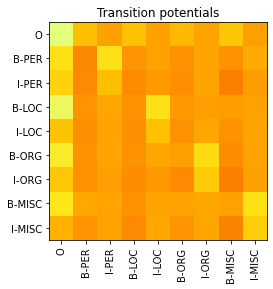

<!DOCTYPE html>
<html class="writer-html5" lang="en" >
<head>
  <meta charset="utf-8" />
  <meta name="viewport" content="width=device-width, initial-scale=1.0" />
  <title>Advanced example: Ner Tagger via BiLSTM-CRF &mdash; GiaNLP 0.0.3 documentation</title>
      <link rel="stylesheet" href="_static/pygments.css" type="text/css" />
      <link rel="stylesheet" href="_static/css/theme.css" type="text/css" />
      <link rel="stylesheet" href="_static/styles.css" type="text/css" />
  <!--[if lt IE 9]>
    <script src="_static/js/html5shiv.min.js"></script>
  <![endif]-->
  
        <script data-url_root="./" id="documentation_options" src="_static/documentation_options.js"></script>
        <script src="_static/jquery.js"></script>
        <script src="_static/underscore.js"></script>
        <script src="_static/_sphinx_javascript_frameworks_compat.js"></script>
        <script src="_static/doctools.js"></script>
    <script src="_static/js/theme.js"></script>
    <link rel="index" title="Index" href="genindex.html" />
    <link rel="search" title="Search" href="search.html" />
    <link rel="next" title="Full API Reference" href="modules.html" />
    <link rel="prev" title="Example: Siamese semantic similarity" href="3_siamese_semantic_similarity.html" /> 
</head>

<body class="wy-body-for-nav"> 
  <div class="wy-grid-for-nav">
    <nav data-toggle="wy-nav-shift" class="wy-nav-side">
      <div class="wy-side-scroll">
        <div class="wy-side-nav-search" >
            <a href="index.html" class="icon icon-home"> GiaNLP
          </a>
              <div class="version">
                0.0.3
              </div>
<div role="search">
  <form id="rtd-search-form" class="wy-form" action="search.html" method="get">
    <input type="text" name="q" placeholder="Search docs" />
    <input type="hidden" name="check_keywords" value="yes" />
    <input type="hidden" name="area" value="default" />
  </form>
</div>
        </div><div class="wy-menu wy-menu-vertical" data-spy="affix" role="navigation" aria-label="Navigation menu">
              <p class="caption" role="heading"><span class="caption-text">Usage &amp; tutorials:</span></p>
<ul class="current">
<li class="toctree-l1"><a class="reference internal" href="library_usage.html">Library usage tutorial</a></li>
<li class="toctree-l1"><a class="reference internal" href="1_quickstart.html">Quickstart: Binary Classifier Tutorial</a></li>
<li class="toctree-l1"><a class="reference internal" href="2_drug_rating_regressor.html">Example: Drug rating regressor tutorial</a></li>
<li class="toctree-l1"><a class="reference internal" href="3_siamese_semantic_similarity.html">Example: Siamese semantic similarity</a></li>
<li class="toctree-l1 current"><a class="current reference internal" href="#">Advanced example: Ner Tagger via BiLSTM-CRF</a><ul>
<li class="toctree-l2"><a class="reference internal" href="#model-architecture">Model architecture</a><ul>
<li class="toctree-l3"><a class="reference internal" href="#word-embeddings">Word embeddings</a></li>
<li class="toctree-l3"><a class="reference internal" href="#char-embedding-per-word-followed-by-digest">Char embedding per word followed by digest</a></li>
<li class="toctree-l3"><a class="reference internal" href="#bilstm-crf">BiLSTM-CRF</a></li>
</ul>
</li>
<li class="toctree-l2"><a class="reference internal" href="#model-building">Model Building</a></li>
<li class="toctree-l2"><a class="reference internal" href="#training">Training</a></li>
<li class="toctree-l2"><a class="reference internal" href="#evaluation">Evaluation</a></li>
<li class="toctree-l2"><a class="reference internal" href="#serialization">Serialization</a></li>
</ul>
</li>
<li class="toctree-l1"><a class="reference internal" href="modules.html">Full API Reference</a></li>
</ul>

        </div>
      </div>
    </nav>

    <section data-toggle="wy-nav-shift" class="wy-nav-content-wrap"><nav class="wy-nav-top" aria-label="Mobile navigation menu" >
          <i data-toggle="wy-nav-top" class="fa fa-bars"></i>
          <a href="index.html">GiaNLP</a>
      </nav>

      <div class="wy-nav-content">
        <div class="rst-content">
          <div role="navigation" aria-label="Page navigation">
  <ul class="wy-breadcrumbs">
      <li><a href="index.html" class="icon icon-home"></a> &raquo;</li>
      <li>Advanced example: Ner Tagger via BiLSTM-CRF</li>
      <li class="wy-breadcrumbs-aside">
              <a href="https://github.com/jian01/GiaNLP/blob/main/docs/4_ner_tagger.md" class="fa fa-github"> Edit on GitHub</a>
      </li>
  </ul>
  <hr/>
</div>
          <div role="main" class="document" itemscope="itemscope" itemtype="http://schema.org/Article">
           <div itemprop="articleBody">
             
  <div class="section" id="advanced-example-ner-tagger-via-bilstm-crf">
<h1>Advanced example: Ner Tagger via BiLSTM-CRF<a class="headerlink" href="#advanced-example-ner-tagger-via-bilstm-crf" title="Permalink to this heading"></a></h1>
<p>We are going to use the famous CoNLL-2003 dataset (Sang, E. F., &amp; De Meulder, F. (2003). Introduction to the CoNLL-2003 shared task: Language-independent named entity recognition. arXiv preprint cs/0306050.)</p>
<p>For the NER tagger we will use an architecture inspired by the BiLSTM-CRF for sequences paper (Huang, Z., Xu, W., &amp; Yu, K. (2015). Bidirectional LSTM-CRF models for sequence tagging. arXiv preprint arXiv:1508.01991.)</p>
<p>This is an advanced usage and is a clear example of what kind of architectures/handling of outputs/losses the library CAN’T support from end to end, but can be of help.</p>
<div class="highlight-python notranslate"><div class="highlight"><pre><span></span>!curl -OL https://data.deepai.org/conll2003.zip
!unzip conll2003.zip
</pre></div>
</div>
<div class="highlight-default notranslate"><div class="highlight"><pre><span></span>  <span class="o">%</span> <span class="n">Total</span>    <span class="o">%</span> <span class="n">Received</span> <span class="o">%</span> <span class="n">Xferd</span>  <span class="n">Average</span> <span class="n">Speed</span>   <span class="n">Time</span>    <span class="n">Time</span>     <span class="n">Time</span>  <span class="n">Current</span>
                                 <span class="n">Dload</span>  <span class="n">Upload</span>   <span class="n">Total</span>   <span class="n">Spent</span>    <span class="n">Left</span>  <span class="n">Speed</span>
<span class="mi">100</span>  <span class="mi">959</span><span class="n">k</span>  <span class="mi">100</span>  <span class="mi">959</span><span class="n">k</span>    <span class="mi">0</span>     <span class="mi">0</span>   <span class="mi">387</span><span class="n">k</span>      <span class="mi">0</span>  <span class="mi">0</span><span class="p">:</span><span class="mi">00</span><span class="p">:</span><span class="mi">02</span>  <span class="mi">0</span><span class="p">:</span><span class="mi">00</span><span class="p">:</span><span class="mi">02</span> <span class="o">--</span><span class="p">:</span><span class="o">--</span><span class="p">:</span><span class="o">--</span>  <span class="mi">387</span><span class="n">k</span>
<span class="n">Archive</span><span class="p">:</span>  <span class="n">conll2003</span><span class="o">.</span><span class="n">zip</span>
  <span class="n">inflating</span><span class="p">:</span> <span class="n">metadata</span>
  <span class="n">inflating</span><span class="p">:</span> <span class="n">test</span><span class="o">.</span><span class="n">txt</span>
  <span class="n">inflating</span><span class="p">:</span> <span class="n">train</span><span class="o">.</span><span class="n">txt</span>
  <span class="n">inflating</span><span class="p">:</span> <span class="n">valid</span><span class="o">.</span><span class="n">txt</span>
</pre></div>
</div>
<div class="highlight-python notranslate"><div class="highlight"><pre><span></span><span class="k">def</span> <span class="nf">load_data_file</span><span class="p">(</span><span class="n">filename</span><span class="p">):</span>
    <span class="k">with</span> <span class="nb">open</span><span class="p">(</span><span class="n">filename</span><span class="p">,</span> <span class="s1">&#39;r&#39;</span><span class="p">)</span> <span class="k">as</span> <span class="n">file</span><span class="p">:</span>
        <span class="n">data</span> <span class="o">=</span> <span class="n">file</span><span class="o">.</span><span class="n">read</span><span class="p">()</span>
    <span class="n">data</span> <span class="o">=</span> <span class="n">data</span><span class="o">.</span><span class="n">split</span><span class="p">(</span><span class="s1">&#39;</span><span class="se">\n\n</span><span class="s1">&#39;</span><span class="p">)[</span><span class="mi">1</span><span class="p">:]</span> <span class="c1"># remove header</span>
    <span class="n">texts</span> <span class="o">=</span> <span class="p">[[</span><span class="n">w_tuple</span><span class="o">.</span><span class="n">split</span><span class="p">(</span><span class="s1">&#39; &#39;</span><span class="p">)[</span><span class="mi">0</span><span class="p">]</span> <span class="k">for</span> <span class="n">w_tuple</span> <span class="ow">in</span> <span class="n">text</span><span class="o">.</span><span class="n">split</span><span class="p">(</span><span class="s1">&#39;</span><span class="se">\n</span><span class="s1">&#39;</span><span class="p">)]</span> <span class="k">for</span> <span class="n">text</span> <span class="ow">in</span> <span class="n">data</span><span class="p">]</span>
    <span class="n">tags</span> <span class="o">=</span> <span class="p">[[</span><span class="n">w_tuple</span><span class="o">.</span><span class="n">split</span><span class="p">(</span><span class="s1">&#39; &#39;</span><span class="p">)[</span><span class="o">-</span><span class="mi">1</span><span class="p">]</span> <span class="k">for</span> <span class="n">w_tuple</span> <span class="ow">in</span> <span class="n">text</span><span class="o">.</span><span class="n">split</span><span class="p">(</span><span class="s1">&#39;</span><span class="se">\n</span><span class="s1">&#39;</span><span class="p">)]</span> <span class="k">for</span> <span class="n">text</span> <span class="ow">in</span> <span class="n">data</span><span class="p">]</span>
    <span class="k">return</span> <span class="n">texts</span><span class="p">,</span> <span class="n">tags</span>
</pre></div>
</div>
<div class="highlight-python notranslate"><div class="highlight"><pre><span></span><span class="n">train_texts</span><span class="p">,</span> <span class="n">train_tags</span> <span class="o">=</span> <span class="n">load_data_file</span><span class="p">(</span><span class="s1">&#39;train.txt&#39;</span><span class="p">)</span>
</pre></div>
</div>
<div class="highlight-python notranslate"><div class="highlight"><pre><span></span><span class="n">valid_texts</span><span class="p">,</span> <span class="n">valid_tags</span> <span class="o">=</span> <span class="n">load_data_file</span><span class="p">(</span><span class="s1">&#39;valid.txt&#39;</span><span class="p">)</span>
</pre></div>
</div>
<div class="highlight-python notranslate"><div class="highlight"><pre><span></span><span class="n">test_texts</span><span class="p">,</span> <span class="n">test_tags</span> <span class="o">=</span> <span class="n">load_data_file</span><span class="p">(</span><span class="s1">&#39;test.txt&#39;</span><span class="p">)</span>
</pre></div>
</div>
<div class="section" id="model-architecture">
<h2>Model architecture<a class="headerlink" href="#model-architecture" title="Permalink to this heading"></a></h2>
<p>We are going to use a word embedding and a char embedding per word.</p>
<div class="section" id="word-embeddings">
<h3>Word embeddings<a class="headerlink" href="#word-embeddings" title="Permalink to this heading"></a></h3>
<div class="highlight-python notranslate"><div class="highlight"><pre><span></span>!curl -O http://downloads.cs.stanford.edu/nlp/data/glove.6B.zip
!unzip -o glove.6B
!python -m gensim.scripts.glove2word2vec --input  glove.6B.50d.txt --output glove.6B.50d.w2vformat.txt
</pre></div>
</div>
<div class="highlight-default notranslate"><div class="highlight"><pre><span></span>  % Total    % Received % Xferd  Average Speed   Time    Time     Time  Current
                                 Dload  Upload   Total   Spent    Left  Speed
100  822M  100  822M    0     0  5172k      0  0:02:42  0:02:42 --:--:-- 5486k2:34  0:00:19  0:02:15 5122k
Archive:  glove.6B.zip
replace glove.6B.50d.txt? [y]es, [n]o, [A]ll, [N]one, [r]ename: ^C
/home/jian01/.pyenv/versions/3.9.5/lib/python3.9/runpy.py:127: RuntimeWarning: &#39;gensim.scripts.glove2word2vec&#39; found in sys.modules after import of package &#39;gensim.scripts&#39;, but prior to execution of &#39;gensim.scripts.glove2word2vec&#39;; this may result in unpredictable behaviour
  warn(RuntimeWarning(msg))
2022-02-21 23:22:04,579 - glove2word2vec - INFO - running /home/jian01/.pyenv/versions/meli/lib/python3.9/site-packages/gensim/scripts/glove2word2vec.py --input glove.6B.50d.txt --output glove.6B.50d.w2vformat.txt
2022-02-21 23:22:08,057 - glove2word2vec - INFO - converting 400000 vectors from glove.6B.50d.txt to glove.6B.50d.w2vformat.txt
2022-02-21 23:22:15,736 - glove2word2vec - INFO - Converted model with 400000 vectors and 50 dimensions
</pre></div>
</div>
<p>We don’t need to tokenize</p>
<div class="highlight-python notranslate"><div class="highlight"><pre><span></span><span class="k">def</span> <span class="nf">dummy_tokenizer</span><span class="p">(</span><span class="n">x</span><span class="p">):</span>
    <span class="k">return</span> <span class="n">x</span>

<span class="k">def</span> <span class="nf">lower_dummy_tokenizer</span><span class="p">(</span><span class="n">x</span><span class="p">):</span>
    <span class="k">return</span> <span class="p">[</span><span class="n">w</span><span class="o">.</span><span class="n">lower</span><span class="p">()</span> <span class="k">for</span> <span class="n">w</span> <span class="ow">in</span> <span class="n">x</span><span class="p">]</span>
</pre></div>
</div>
<div class="highlight-python notranslate"><div class="highlight"><pre><span></span><span class="nb">max</span><span class="p">([</span><span class="nb">len</span><span class="p">(</span><span class="n">t</span><span class="p">)</span> <span class="k">for</span> <span class="n">t</span> <span class="ow">in</span> <span class="n">train_tags</span><span class="p">])</span>
</pre></div>
</div>
<div class="highlight-default notranslate"><div class="highlight"><pre><span></span><span class="mi">113</span>
</pre></div>
</div>
<div class="highlight-python notranslate"><div class="highlight"><pre><span></span><span class="n">test_texts</span> <span class="o">=</span> <span class="p">[</span><span class="n">t</span><span class="p">[:</span><span class="mi">113</span><span class="p">]</span> <span class="k">for</span> <span class="n">t</span> <span class="ow">in</span> <span class="n">test_texts</span><span class="p">]</span>
<span class="n">valid_texts</span> <span class="o">=</span> <span class="p">[</span><span class="n">t</span><span class="p">[:</span><span class="mi">113</span><span class="p">]</span> <span class="k">for</span> <span class="n">t</span> <span class="ow">in</span> <span class="n">valid_texts</span><span class="p">]</span>
</pre></div>
</div>
<div class="highlight-python notranslate"><div class="highlight"><pre><span></span><span class="n">word_emb</span> <span class="o">=</span> <span class="n">PreTrainedWordEmbeddingSequence</span><span class="p">(</span><span class="s2">&quot;glove.6B.50d.w2vformat.txt&quot;</span><span class="p">,</span>
                                           <span class="n">tokenizer</span><span class="o">=</span><span class="n">lower_dummy_tokenizer</span><span class="p">,</span>
                                           <span class="n">sequence_maxlen</span><span class="o">=</span><span class="mi">113</span><span class="p">)</span>
</pre></div>
</div>
<div class="highlight-python notranslate"><div class="highlight"><pre><span></span><span class="n">word_emb</span><span class="o">.</span><span class="n">outputs_shape</span>
</pre></div>
</div>
<div class="highlight-default notranslate"><div class="highlight"><pre><span></span><span class="p">(</span><span class="mi">113</span><span class="p">,</span> <span class="mi">50</span><span class="p">),</span> <span class="n">float32</span>
</pre></div>
</div>
</div>
<div class="section" id="char-embedding-per-word-followed-by-digest">
<h3>Char embedding per word followed by digest<a class="headerlink" href="#char-embedding-per-word-followed-by-digest" title="Permalink to this heading"></a></h3>
<div class="highlight-python notranslate"><div class="highlight"><pre><span></span><span class="n">char_per_word</span> <span class="o">=</span> <span class="n">CharPerWordEmbeddingSequence</span><span class="p">(</span><span class="n">tokenizer</span><span class="o">=</span><span class="n">dummy_tokenizer</span><span class="p">,</span> <span class="n">embedding_dimension</span><span class="o">=</span><span class="mi">32</span><span class="p">,</span>
                                             <span class="n">word_maxlen</span><span class="o">=</span><span class="mi">113</span><span class="p">,</span> <span class="n">char_maxlen</span><span class="o">=</span><span class="mi">10</span><span class="p">)</span>
<span class="n">char_digest_per_word</span> <span class="o">=</span> <span class="n">RNNDigest</span><span class="p">(</span><span class="n">char_per_word</span><span class="p">,</span> <span class="n">units_per_layer</span><span class="o">=</span><span class="mi">30</span><span class="p">,</span> <span class="n">rnn_type</span><span class="o">=</span><span class="s1">&#39;gru&#39;</span><span class="p">,</span> <span class="n">stacked_layers</span><span class="o">=</span><span class="mi">3</span><span class="p">)</span>
</pre></div>
</div>
<div class="highlight-python notranslate"><div class="highlight"><pre><span></span><span class="n">char_digest_per_word</span><span class="o">.</span><span class="n">outputs_shape</span>
</pre></div>
</div>
<div class="highlight-default notranslate"><div class="highlight"><pre><span></span><span class="n">WARNING</span><span class="p">:</span><span class="n">nlp_builder</span><span class="p">:</span><span class="n">If</span> <span class="n">the</span> <span class="n">model</span> <span class="ow">and</span> <span class="n">wrapper</span> <span class="n">inputs</span> <span class="n">mismatch</span> <span class="n">it</span> <span class="n">will</span> <span class="n">only</span> <span class="n">be</span> <span class="n">noticed</span> <span class="n">when</span> <span class="n">building</span><span class="p">,</span> <span class="n">before</span> <span class="n">that</span> <span class="n">output</span> <span class="n">shape</span> <span class="ow">is</span> <span class="n">an</span> <span class="n">estimate</span> <span class="ow">and</span> <span class="n">does</span> <span class="ow">not</span> <span class="k">assert</span> <span class="n">inputs</span><span class="o">.</span>

<span class="p">(</span><span class="mi">113</span><span class="p">,</span> <span class="mi">30</span><span class="p">),</span> <span class="n">float32</span>
</pre></div>
</div>
</div>
<div class="section" id="bilstm-crf">
<h3>BiLSTM-CRF<a class="headerlink" href="#bilstm-crf" title="Permalink to this heading"></a></h3>
<p>We can’t build the BiLSTM-CRF using the library because the loss if very hard to set, so we are going to use the library up to this point and continue using keras</p>
<div class="highlight-python notranslate"><div class="highlight"><pre><span></span>!pip install tensorflow-addons
</pre></div>
</div>
<div class="highlight-default notranslate"><div class="highlight"><pre><span></span>Requirement already satisfied: tensorflow-addons in /home/jian01/.pyenv/versions/3.9.5/envs/meli/lib/python3.9/site-packages (0.16.1)
Requirement already satisfied: typeguard&gt;=2.7 in /home/jian01/.pyenv/versions/3.9.5/envs/meli/lib/python3.9/site-packages (from tensorflow-addons) (2.13.3)
WARNING: You are using pip version 21.1.1; however, version 22.0.3 is available.
You should consider upgrading via the &#39;/home/jian01/.pyenv/versions/3.9.5/envs/meli/bin/python3.9 -m pip install --upgrade pip&#39; command.
</pre></div>
</div>
<p>We need to know the amount of labels</p>
<div class="highlight-python notranslate"><div class="highlight"><pre><span></span><span class="n">possible_tags</span> <span class="o">=</span> <span class="nb">list</span><span class="p">(</span><span class="nb">set</span><span class="p">([</span><span class="n">tag</span> <span class="k">for</span> <span class="n">text_tags</span> <span class="ow">in</span> <span class="n">train_tags</span> <span class="k">for</span> <span class="n">tag</span> <span class="ow">in</span> <span class="n">text_tags</span> <span class="k">if</span> <span class="n">tag</span><span class="p">]))</span>
<span class="n">possible_tags</span>
</pre></div>
</div>
<div class="highlight-default notranslate"><div class="highlight"><pre><span></span><span class="p">[</span><span class="s1">&#39;I-PER&#39;</span><span class="p">,</span> <span class="s1">&#39;I-MISC&#39;</span><span class="p">,</span> <span class="s1">&#39;I-ORG&#39;</span><span class="p">,</span> <span class="s1">&#39;B-PER&#39;</span><span class="p">,</span> <span class="s1">&#39;B-ORG&#39;</span><span class="p">,</span> <span class="s1">&#39;O&#39;</span><span class="p">,</span> <span class="s1">&#39;I-LOC&#39;</span><span class="p">,</span> <span class="s1">&#39;B-MISC&#39;</span><span class="p">,</span> <span class="s1">&#39;B-LOC&#39;</span><span class="p">]</span>
</pre></div>
</div>
<div class="highlight-python notranslate"><div class="highlight"><pre><span></span><span class="kn">from</span> <span class="nn">tensorflow.keras.layers</span> <span class="kn">import</span> <span class="n">Dense</span><span class="p">,</span> <span class="n">Conv1D</span><span class="p">,</span> <span class="n">Masking</span><span class="p">,</span> <span class="n">Concatenate</span><span class="p">,</span> <span class="n">Input</span><span class="p">,</span> <span class="n">LSTM</span><span class="p">,</span> <span class="n">Bidirectional</span><span class="p">,</span> <span class="n">Lambda</span><span class="p">,</span> <span class="n">Flatten</span>
<span class="kn">from</span> <span class="nn">tensorflow.keras.models</span> <span class="kn">import</span> <span class="n">Model</span><span class="p">,</span> <span class="n">Sequential</span>
</pre></div>
</div>
<p>We will use a custom CRF layer taken from <a class="reference external" href="https://github.com/Damcy/mytf2/blob/59135d91b57f041029885ebff51f4119c2aa1677/mytf2/layer/CRF.py">https://github.com/Damcy/mytf2/blob/59135d91b57f041029885ebff51f4119c2aa1677/mytf2/layer/CRF.py</a></p>
<p>It is extremely hard to use the CRF layer from tensorflow addons along with keras since it has 4 outputs of different shapes and computing a loss for that inside keras is not trivial. A CRF is a probabilistic model involving multiple parameters so all must be considered in the likelihood calculation.</p>
<div class="highlight-python notranslate"><div class="highlight"><pre><span></span><span class="kn">from</span> <span class="nn">tensorflow</span> <span class="kn">import</span> <span class="n">keras</span>
<span class="kn">from</span> <span class="nn">tensorflow.keras</span> <span class="kn">import</span> <span class="n">layers</span><span class="p">,</span> <span class="n">models</span>
<span class="kn">from</span> <span class="nn">tensorflow.keras</span> <span class="kn">import</span> <span class="n">backend</span> <span class="k">as</span> <span class="n">K</span>
<span class="kn">import</span> <span class="nn">tensorflow</span> <span class="k">as</span> <span class="nn">tf</span>
<span class="kn">from</span> <span class="nn">tensorflow_addons.text</span> <span class="kn">import</span> <span class="n">crf_log_likelihood</span>

<span class="k">class</span> <span class="nc">CRF</span><span class="p">(</span><span class="n">layers</span><span class="o">.</span><span class="n">Layer</span><span class="p">):</span>
    <span class="k">def</span> <span class="fm">__init__</span><span class="p">(</span><span class="bp">self</span><span class="p">,</span> <span class="n">label_size</span><span class="p">):</span>
        <span class="nb">super</span><span class="p">(</span><span class="n">CRF</span><span class="p">,</span> <span class="bp">self</span><span class="p">)</span><span class="o">.</span><span class="fm">__init__</span><span class="p">()</span>
        <span class="bp">self</span><span class="o">.</span><span class="n">trans_params</span> <span class="o">=</span> <span class="n">tf</span><span class="o">.</span><span class="n">Variable</span><span class="p">(</span>
            <span class="n">tf</span><span class="o">.</span><span class="n">random</span><span class="o">.</span><span class="n">uniform</span><span class="p">(</span><span class="n">shape</span><span class="o">=</span><span class="p">(</span><span class="n">label_size</span><span class="p">,</span> <span class="n">label_size</span><span class="p">)),</span> <span class="n">name</span><span class="o">=</span><span class="s1">&#39;transition&#39;</span><span class="p">)</span>

    <span class="nd">@tf</span><span class="o">.</span><span class="n">function</span>
    <span class="k">def</span> <span class="nf">call</span><span class="p">(</span><span class="bp">self</span><span class="p">,</span> <span class="n">inputs</span><span class="p">,</span> <span class="n">labels</span><span class="p">,</span> <span class="n">seq_lens</span><span class="p">):</span>
        <span class="n">inputs</span> <span class="o">=</span> <span class="n">tf</span><span class="o">.</span><span class="n">convert_to_tensor</span><span class="p">(</span><span class="n">inputs</span><span class="p">)</span>
        <span class="n">log_likelihood</span><span class="p">,</span> <span class="bp">self</span><span class="o">.</span><span class="n">trans_params</span> <span class="o">=</span> <span class="n">crf_log_likelihood</span><span class="p">(</span>
                                                <span class="n">inputs</span><span class="p">,</span> <span class="n">labels</span><span class="p">,</span> <span class="n">seq_lens</span><span class="p">,</span>
                                                <span class="n">transition_params</span><span class="o">=</span><span class="bp">self</span><span class="o">.</span><span class="n">trans_params</span><span class="p">)</span>
        <span class="n">loss</span> <span class="o">=</span> <span class="n">tf</span><span class="o">.</span><span class="n">reduce_sum</span><span class="p">(</span><span class="o">-</span><span class="n">log_likelihood</span><span class="p">)</span>
        <span class="k">return</span> <span class="n">loss</span>
</pre></div>
</div>
<p>The transition potentials are modeled in the CRF and the unary potentials are modelled by the dense layers</p>
<div class="highlight-python notranslate"><div class="highlight"><pre><span></span><span class="n">inp1</span> <span class="o">=</span> <span class="n">Input</span><span class="p">((</span><span class="mi">113</span><span class="p">,</span><span class="mi">50</span><span class="p">),</span> <span class="n">name</span><span class="o">=</span><span class="s1">&#39;inp1&#39;</span><span class="p">)</span>
<span class="n">inp2</span> <span class="o">=</span> <span class="n">Input</span><span class="p">((</span><span class="mi">113</span><span class="p">,</span><span class="mi">30</span><span class="p">),</span> <span class="n">name</span><span class="o">=</span><span class="s1">&#39;inp2&#39;</span><span class="p">)</span>
<span class="n">targets</span> <span class="o">=</span> <span class="n">Input</span><span class="p">(</span><span class="n">shape</span><span class="o">=</span><span class="p">(</span><span class="mi">113</span><span class="p">,),</span> <span class="n">name</span><span class="o">=</span><span class="s1">&#39;target_ids&#39;</span><span class="p">,</span> <span class="n">dtype</span><span class="o">=</span><span class="s1">&#39;int32&#39;</span><span class="p">)</span>
<span class="n">seq_lens</span> <span class="o">=</span> <span class="n">Input</span><span class="p">(</span><span class="n">shape</span><span class="o">=</span><span class="p">(),</span> <span class="n">name</span><span class="o">=</span><span class="s1">&#39;input_lens&#39;</span><span class="p">,</span> <span class="n">dtype</span><span class="o">=</span><span class="s1">&#39;int32&#39;</span><span class="p">)</span>
<span class="n">inp1</span> <span class="o">=</span> <span class="n">Masking</span><span class="p">(</span><span class="mf">0.0</span><span class="p">)(</span><span class="n">inp1</span><span class="p">)</span>
<span class="n">x</span> <span class="o">=</span> <span class="n">Concatenate</span><span class="p">()([</span><span class="n">inp1</span><span class="p">,</span> <span class="n">inp2</span><span class="p">])</span>
<span class="n">x</span> <span class="o">=</span> <span class="n">Bidirectional</span><span class="p">(</span><span class="n">LSTM</span><span class="p">(</span><span class="mi">20</span><span class="p">,</span> <span class="n">return_sequences</span><span class="o">=</span><span class="kc">True</span><span class="p">))(</span><span class="n">x</span><span class="p">)</span>
<span class="n">x</span> <span class="o">=</span> <span class="n">Bidirectional</span><span class="p">(</span><span class="n">LSTM</span><span class="p">(</span><span class="mi">20</span><span class="p">,</span> <span class="n">return_sequences</span><span class="o">=</span><span class="kc">True</span><span class="p">))(</span><span class="n">x</span><span class="p">)</span>
<span class="n">x</span> <span class="o">=</span> <span class="n">Bidirectional</span><span class="p">(</span><span class="n">LSTM</span><span class="p">(</span><span class="mi">20</span><span class="p">,</span> <span class="n">return_sequences</span><span class="o">=</span><span class="kc">True</span><span class="p">))(</span><span class="n">x</span><span class="p">)</span>
<span class="n">x</span> <span class="o">=</span> <span class="n">Bidirectional</span><span class="p">(</span><span class="n">LSTM</span><span class="p">(</span><span class="mi">20</span><span class="p">,</span> <span class="n">return_sequences</span><span class="o">=</span><span class="kc">True</span><span class="p">))(</span><span class="n">x</span><span class="p">)</span>
<span class="n">x</span> <span class="o">=</span> <span class="n">Bidirectional</span><span class="p">(</span><span class="n">LSTM</span><span class="p">(</span><span class="mi">20</span><span class="p">,</span> <span class="n">return_sequences</span><span class="o">=</span><span class="kc">True</span><span class="p">))(</span><span class="n">x</span><span class="p">)</span>
<span class="n">unary</span> <span class="o">=</span> <span class="n">Dense</span><span class="p">(</span><span class="nb">len</span><span class="p">(</span><span class="n">possible_tags</span><span class="p">),</span> <span class="n">activation</span><span class="o">=</span><span class="s1">&#39;tanh&#39;</span><span class="p">)(</span><span class="n">x</span><span class="p">)</span>
<span class="n">unary</span> <span class="o">=</span> <span class="n">Dense</span><span class="p">(</span><span class="nb">len</span><span class="p">(</span><span class="n">possible_tags</span><span class="p">),</span> <span class="n">activation</span><span class="o">=</span><span class="s1">&#39;tanh&#39;</span><span class="p">)(</span><span class="n">unary</span><span class="p">)</span>
<span class="n">unary</span> <span class="o">=</span> <span class="n">Dense</span><span class="p">(</span><span class="nb">len</span><span class="p">(</span><span class="n">possible_tags</span><span class="p">),</span> <span class="n">activation</span><span class="o">=</span><span class="s1">&#39;tanh&#39;</span><span class="p">)(</span><span class="n">unary</span><span class="p">)</span>
<span class="n">logits</span> <span class="o">=</span> <span class="n">Dense</span><span class="p">(</span><span class="nb">len</span><span class="p">(</span><span class="n">possible_tags</span><span class="p">),</span> <span class="n">activation</span><span class="o">=</span><span class="s1">&#39;tanh&#39;</span><span class="p">,</span> <span class="n">name</span><span class="o">=</span><span class="s1">&#39;logits&#39;</span><span class="p">)(</span><span class="n">unary</span><span class="p">)</span>
<span class="n">loss</span> <span class="o">=</span> <span class="n">CRF</span><span class="p">(</span><span class="nb">len</span><span class="p">(</span><span class="n">possible_tags</span><span class="p">))(</span><span class="n">logits</span><span class="p">,</span> <span class="n">targets</span><span class="p">,</span> <span class="n">seq_lens</span><span class="p">)</span>

<span class="n">model</span> <span class="o">=</span> <span class="n">Model</span><span class="p">(</span><span class="n">inputs</span><span class="o">=</span><span class="p">[</span><span class="n">inp1</span><span class="p">,</span> <span class="n">inp2</span><span class="p">,</span> <span class="n">targets</span><span class="p">,</span> <span class="n">seq_lens</span><span class="p">],</span> <span class="n">outputs</span><span class="o">=</span><span class="n">loss</span><span class="p">)</span>

<span class="n">model</span><span class="o">.</span><span class="n">summary</span><span class="p">()</span>
</pre></div>
</div>
<div class="highlight-default notranslate"><div class="highlight"><pre><span></span><span class="n">Model</span><span class="p">:</span> <span class="s2">&quot;model&quot;</span>
<span class="n">__________________________________________________________________________________________________</span>
 <span class="n">Layer</span> <span class="p">(</span><span class="nb">type</span><span class="p">)</span>                   <span class="n">Output</span> <span class="n">Shape</span>         <span class="n">Param</span> <span class="c1">#     Connected to</span>
<span class="o">==================================================================================================</span>
 <span class="n">input_2</span> <span class="p">(</span><span class="n">InputLayer</span><span class="p">)</span>           <span class="p">[(</span><span class="kc">None</span><span class="p">,</span> <span class="mi">113</span><span class="p">,</span> <span class="mi">50</span><span class="p">)]</span>    <span class="mi">0</span>           <span class="p">[]</span>

 <span class="n">inp2</span> <span class="p">(</span><span class="n">InputLayer</span><span class="p">)</span>              <span class="p">[(</span><span class="kc">None</span><span class="p">,</span> <span class="mi">113</span><span class="p">,</span> <span class="mi">30</span><span class="p">)]</span>    <span class="mi">0</span>           <span class="p">[]</span>

 <span class="n">concatenate</span> <span class="p">(</span><span class="n">Concatenate</span><span class="p">)</span>      <span class="p">(</span><span class="kc">None</span><span class="p">,</span> <span class="mi">113</span><span class="p">,</span> <span class="mi">80</span><span class="p">)</span>      <span class="mi">0</span>           <span class="p">[</span><span class="s1">&#39;input_2[0][0]&#39;</span><span class="p">,</span>
                                                                  <span class="s1">&#39;inp2[0][0]&#39;</span><span class="p">]</span>

 <span class="n">bidirectional</span> <span class="p">(</span><span class="n">Bidirectional</span><span class="p">)</span>  <span class="p">(</span><span class="kc">None</span><span class="p">,</span> <span class="mi">113</span><span class="p">,</span> <span class="mi">40</span><span class="p">)</span>      <span class="mi">16160</span>       <span class="p">[</span><span class="s1">&#39;concatenate[1][0]&#39;</span><span class="p">]</span>

 <span class="n">bidirectional_1</span> <span class="p">(</span><span class="n">Bidirectional</span>  <span class="p">(</span><span class="kc">None</span><span class="p">,</span> <span class="mi">113</span><span class="p">,</span> <span class="mi">40</span><span class="p">)</span>     <span class="mi">9760</span>        <span class="p">[</span><span class="s1">&#39;bidirectional[1][0]&#39;</span><span class="p">]</span>
 <span class="p">)</span>

 <span class="n">bidirectional_2</span> <span class="p">(</span><span class="n">Bidirectional</span>  <span class="p">(</span><span class="kc">None</span><span class="p">,</span> <span class="mi">113</span><span class="p">,</span> <span class="mi">40</span><span class="p">)</span>     <span class="mi">9760</span>        <span class="p">[</span><span class="s1">&#39;bidirectional_1[1][0]&#39;</span><span class="p">]</span>
 <span class="p">)</span>

 <span class="n">bidirectional_3</span> <span class="p">(</span><span class="n">Bidirectional</span>  <span class="p">(</span><span class="kc">None</span><span class="p">,</span> <span class="mi">113</span><span class="p">,</span> <span class="mi">40</span><span class="p">)</span>     <span class="mi">9760</span>        <span class="p">[</span><span class="s1">&#39;bidirectional_2[1][0]&#39;</span><span class="p">]</span>
 <span class="p">)</span>

 <span class="n">bidirectional_4</span> <span class="p">(</span><span class="n">Bidirectional</span>  <span class="p">(</span><span class="kc">None</span><span class="p">,</span> <span class="mi">113</span><span class="p">,</span> <span class="mi">40</span><span class="p">)</span>     <span class="mi">9760</span>        <span class="p">[</span><span class="s1">&#39;bidirectional_3[1][0]&#39;</span><span class="p">]</span>
 <span class="p">)</span>

 <span class="n">dense</span> <span class="p">(</span><span class="n">Dense</span><span class="p">)</span>                  <span class="p">(</span><span class="kc">None</span><span class="p">,</span> <span class="mi">113</span><span class="p">,</span> <span class="mi">9</span><span class="p">)</span>       <span class="mi">369</span>         <span class="p">[</span><span class="s1">&#39;bidirectional_4[1][0]&#39;</span><span class="p">]</span>

 <span class="n">dense_1</span> <span class="p">(</span><span class="n">Dense</span><span class="p">)</span>                <span class="p">(</span><span class="kc">None</span><span class="p">,</span> <span class="mi">113</span><span class="p">,</span> <span class="mi">9</span><span class="p">)</span>       <span class="mi">90</span>          <span class="p">[</span><span class="s1">&#39;dense[1][0]&#39;</span><span class="p">]</span>

 <span class="n">dense_2</span> <span class="p">(</span><span class="n">Dense</span><span class="p">)</span>                <span class="p">(</span><span class="kc">None</span><span class="p">,</span> <span class="mi">113</span><span class="p">,</span> <span class="mi">9</span><span class="p">)</span>       <span class="mi">90</span>          <span class="p">[</span><span class="s1">&#39;dense_1[1][0]&#39;</span><span class="p">]</span>

 <span class="n">logits</span> <span class="p">(</span><span class="n">Dense</span><span class="p">)</span>                 <span class="p">(</span><span class="kc">None</span><span class="p">,</span> <span class="mi">113</span><span class="p">,</span> <span class="mi">9</span><span class="p">)</span>       <span class="mi">90</span>          <span class="p">[</span><span class="s1">&#39;dense_2[1][0]&#39;</span><span class="p">]</span>

 <span class="n">target_ids</span> <span class="p">(</span><span class="n">InputLayer</span><span class="p">)</span>        <span class="p">[(</span><span class="kc">None</span><span class="p">,</span> <span class="mi">113</span><span class="p">)]</span>        <span class="mi">0</span>           <span class="p">[]</span>

 <span class="n">input_lens</span> <span class="p">(</span><span class="n">InputLayer</span><span class="p">)</span>        <span class="p">[(</span><span class="kc">None</span><span class="p">,)]</span>            <span class="mi">0</span>           <span class="p">[]</span>

 <span class="n">crf</span> <span class="p">(</span><span class="n">CRF</span><span class="p">)</span>                      <span class="p">()</span>                   <span class="mi">81</span>          <span class="p">[</span><span class="s1">&#39;logits[1][0]&#39;</span><span class="p">,</span>
                                                                  <span class="s1">&#39;target_ids[0][0]&#39;</span><span class="p">,</span>
                                                                  <span class="s1">&#39;input_lens[0][0]&#39;</span><span class="p">]</span>

<span class="o">==================================================================================================</span>
<span class="n">Total</span> <span class="n">params</span><span class="p">:</span> <span class="mi">55</span><span class="p">,</span><span class="mi">920</span>
<span class="n">Trainable</span> <span class="n">params</span><span class="p">:</span> <span class="mi">55</span><span class="p">,</span><span class="mi">920</span>
<span class="n">Non</span><span class="o">-</span><span class="n">trainable</span> <span class="n">params</span><span class="p">:</span> <span class="mi">0</span>
<span class="n">__________________________________________________________________________________________________</span>
</pre></div>
</div>
</div>
</div>
<div class="section" id="model-building">
<h2>Model Building<a class="headerlink" href="#model-building" title="Permalink to this heading"></a></h2>
<div class="highlight-python notranslate"><div class="highlight"><pre><span></span><span class="n">char_digest_per_word</span><span class="o">.</span><span class="n">build</span><span class="p">([</span><span class="s2">&quot; &quot;</span><span class="o">.</span><span class="n">join</span><span class="p">(</span><span class="n">text</span><span class="p">)</span> <span class="k">for</span> <span class="n">text</span> <span class="ow">in</span> <span class="n">train_texts</span><span class="p">])</span>
<span class="n">word_emb</span><span class="o">.</span><span class="n">build</span><span class="p">([</span><span class="s2">&quot; &quot;</span><span class="o">.</span><span class="n">join</span><span class="p">(</span><span class="n">text</span><span class="p">)</span> <span class="k">for</span> <span class="n">text</span> <span class="ow">in</span> <span class="n">train_texts</span><span class="p">])</span>
</pre></div>
</div>
</div>
<div class="section" id="training">
<h2>Training<a class="headerlink" href="#training" title="Permalink to this heading"></a></h2>
<div class="highlight-python notranslate"><div class="highlight"><pre><span></span><span class="kn">import</span> <span class="nn">numpy</span> <span class="k">as</span> <span class="nn">np</span>
<span class="kn">from</span> <span class="nn">tensorflow.keras.preprocessing</span> <span class="kn">import</span> <span class="n">sequence</span> <span class="k">as</span> <span class="n">keras_seq</span>

<span class="k">def</span> <span class="nf">preprocess_tags</span><span class="p">(</span><span class="n">tags</span><span class="p">,</span> <span class="n">possible_tags</span><span class="p">,</span> <span class="n">maxlen</span><span class="p">):</span>
    <span class="n">new_seqs</span> <span class="o">=</span> <span class="p">[]</span>
    <span class="n">sequence_lens</span> <span class="o">=</span> <span class="p">[]</span>
    <span class="k">for</span> <span class="n">tag_seq</span> <span class="ow">in</span> <span class="n">tags</span><span class="p">:</span>
        <span class="n">new_seq</span> <span class="o">=</span> <span class="p">[]</span>
        <span class="k">for</span> <span class="n">t</span> <span class="ow">in</span> <span class="n">tag_seq</span><span class="p">:</span>
            <span class="k">if</span> <span class="n">t</span> <span class="ow">in</span> <span class="n">possible_tags</span><span class="p">:</span>
                <span class="n">new_seq</span><span class="o">.</span><span class="n">append</span><span class="p">(</span><span class="n">possible_tags</span><span class="o">.</span><span class="n">index</span><span class="p">(</span><span class="n">t</span><span class="p">))</span>
            <span class="k">else</span><span class="p">:</span>
                <span class="n">new_seq</span><span class="o">.</span><span class="n">append</span><span class="p">(</span><span class="n">possible_tags</span><span class="o">.</span><span class="n">index</span><span class="p">(</span><span class="s1">&#39;O&#39;</span><span class="p">))</span>
        <span class="n">new_seqs</span><span class="o">.</span><span class="n">append</span><span class="p">(</span><span class="n">new_seq</span><span class="p">)</span>
        <span class="n">sequence_lens</span><span class="o">.</span><span class="n">append</span><span class="p">(</span><span class="nb">len</span><span class="p">(</span><span class="n">new_seq</span><span class="p">))</span>
    <span class="k">return</span> <span class="n">keras_seq</span><span class="o">.</span><span class="n">pad_sequences</span><span class="p">(</span><span class="n">new_seqs</span><span class="p">,</span> <span class="n">maxlen</span><span class="o">=</span><span class="n">maxlen</span><span class="p">,</span> <span class="n">dtype</span><span class="o">=</span><span class="s2">&quot;int32&quot;</span><span class="p">,</span>
                                   <span class="n">padding</span><span class="o">=</span><span class="s2">&quot;post&quot;</span><span class="p">,</span> <span class="n">truncating</span><span class="o">=</span><span class="s2">&quot;post&quot;</span><span class="p">,</span><span class="n">value</span><span class="o">=-</span><span class="mi">1</span><span class="p">),</span> <span class="n">np</span><span class="o">.</span><span class="n">asarray</span><span class="p">(</span><span class="n">sequence_lens</span><span class="p">)</span>
</pre></div>
</div>
<div class="highlight-python notranslate"><div class="highlight"><pre><span></span><span class="n">train_tags_prep</span><span class="p">,</span> <span class="n">train_lens</span> <span class="o">=</span> <span class="n">preprocess_tags</span><span class="p">(</span><span class="n">train_tags</span><span class="p">,</span> <span class="n">possible_tags</span><span class="p">,</span> <span class="mi">113</span><span class="p">)</span>
<span class="n">test_tags_prep</span><span class="p">,</span> <span class="n">test_lens</span> <span class="o">=</span> <span class="n">preprocess_tags</span><span class="p">(</span><span class="n">test_tags</span><span class="p">,</span> <span class="n">possible_tags</span><span class="p">,</span> <span class="mi">113</span><span class="p">)</span>
<span class="n">valid_tags_prep</span><span class="p">,</span> <span class="n">valid_lens</span> <span class="o">=</span> <span class="n">preprocess_tags</span><span class="p">(</span><span class="n">valid_tags</span><span class="p">,</span> <span class="n">possible_tags</span><span class="p">,</span> <span class="mi">113</span><span class="p">)</span>
</pre></div>
</div>
<div class="highlight-python notranslate"><div class="highlight"><pre><span></span><span class="n">train_tags_prep</span><span class="o">.</span><span class="n">shape</span>
</pre></div>
</div>
<div class="highlight-default notranslate"><div class="highlight"><pre><span></span><span class="p">(</span><span class="mi">14987</span><span class="p">,</span> <span class="mi">113</span><span class="p">)</span>
</pre></div>
</div>
<div class="highlight-python notranslate"><div class="highlight"><pre><span></span><span class="n">train_tags_prep</span><span class="p">[</span><span class="mi">0</span><span class="p">],</span> <span class="n">train_lens</span><span class="p">[</span><span class="mi">0</span><span class="p">]</span>
</pre></div>
</div>
<div class="highlight-default notranslate"><div class="highlight"><pre><span></span><span class="p">(</span><span class="n">array</span><span class="p">([</span> <span class="mi">4</span><span class="p">,</span>  <span class="mi">5</span><span class="p">,</span>  <span class="mi">7</span><span class="p">,</span>  <span class="mi">5</span><span class="p">,</span>  <span class="mi">5</span><span class="p">,</span>  <span class="mi">5</span><span class="p">,</span>  <span class="mi">7</span><span class="p">,</span>  <span class="mi">5</span><span class="p">,</span>  <span class="mi">5</span><span class="p">,</span> <span class="o">-</span><span class="mi">1</span><span class="p">,</span> <span class="o">-</span><span class="mi">1</span><span class="p">,</span> <span class="o">-</span><span class="mi">1</span><span class="p">,</span> <span class="o">-</span><span class="mi">1</span><span class="p">,</span> <span class="o">-</span><span class="mi">1</span><span class="p">,</span> <span class="o">-</span><span class="mi">1</span><span class="p">,</span> <span class="o">-</span><span class="mi">1</span><span class="p">,</span> <span class="o">-</span><span class="mi">1</span><span class="p">,</span>
        <span class="o">-</span><span class="mi">1</span><span class="p">,</span> <span class="o">-</span><span class="mi">1</span><span class="p">,</span> <span class="o">-</span><span class="mi">1</span><span class="p">,</span> <span class="o">-</span><span class="mi">1</span><span class="p">,</span> <span class="o">-</span><span class="mi">1</span><span class="p">,</span> <span class="o">-</span><span class="mi">1</span><span class="p">,</span> <span class="o">-</span><span class="mi">1</span><span class="p">,</span> <span class="o">-</span><span class="mi">1</span><span class="p">,</span> <span class="o">-</span><span class="mi">1</span><span class="p">,</span> <span class="o">-</span><span class="mi">1</span><span class="p">,</span> <span class="o">-</span><span class="mi">1</span><span class="p">,</span> <span class="o">-</span><span class="mi">1</span><span class="p">,</span> <span class="o">-</span><span class="mi">1</span><span class="p">,</span> <span class="o">-</span><span class="mi">1</span><span class="p">,</span> <span class="o">-</span><span class="mi">1</span><span class="p">,</span> <span class="o">-</span><span class="mi">1</span><span class="p">,</span> <span class="o">-</span><span class="mi">1</span><span class="p">,</span>
        <span class="o">-</span><span class="mi">1</span><span class="p">,</span> <span class="o">-</span><span class="mi">1</span><span class="p">,</span> <span class="o">-</span><span class="mi">1</span><span class="p">,</span> <span class="o">-</span><span class="mi">1</span><span class="p">,</span> <span class="o">-</span><span class="mi">1</span><span class="p">,</span> <span class="o">-</span><span class="mi">1</span><span class="p">,</span> <span class="o">-</span><span class="mi">1</span><span class="p">,</span> <span class="o">-</span><span class="mi">1</span><span class="p">,</span> <span class="o">-</span><span class="mi">1</span><span class="p">,</span> <span class="o">-</span><span class="mi">1</span><span class="p">,</span> <span class="o">-</span><span class="mi">1</span><span class="p">,</span> <span class="o">-</span><span class="mi">1</span><span class="p">,</span> <span class="o">-</span><span class="mi">1</span><span class="p">,</span> <span class="o">-</span><span class="mi">1</span><span class="p">,</span> <span class="o">-</span><span class="mi">1</span><span class="p">,</span> <span class="o">-</span><span class="mi">1</span><span class="p">,</span> <span class="o">-</span><span class="mi">1</span><span class="p">,</span>
        <span class="o">-</span><span class="mi">1</span><span class="p">,</span> <span class="o">-</span><span class="mi">1</span><span class="p">,</span> <span class="o">-</span><span class="mi">1</span><span class="p">,</span> <span class="o">-</span><span class="mi">1</span><span class="p">,</span> <span class="o">-</span><span class="mi">1</span><span class="p">,</span> <span class="o">-</span><span class="mi">1</span><span class="p">,</span> <span class="o">-</span><span class="mi">1</span><span class="p">,</span> <span class="o">-</span><span class="mi">1</span><span class="p">,</span> <span class="o">-</span><span class="mi">1</span><span class="p">,</span> <span class="o">-</span><span class="mi">1</span><span class="p">,</span> <span class="o">-</span><span class="mi">1</span><span class="p">,</span> <span class="o">-</span><span class="mi">1</span><span class="p">,</span> <span class="o">-</span><span class="mi">1</span><span class="p">,</span> <span class="o">-</span><span class="mi">1</span><span class="p">,</span> <span class="o">-</span><span class="mi">1</span><span class="p">,</span> <span class="o">-</span><span class="mi">1</span><span class="p">,</span> <span class="o">-</span><span class="mi">1</span><span class="p">,</span>
        <span class="o">-</span><span class="mi">1</span><span class="p">,</span> <span class="o">-</span><span class="mi">1</span><span class="p">,</span> <span class="o">-</span><span class="mi">1</span><span class="p">,</span> <span class="o">-</span><span class="mi">1</span><span class="p">,</span> <span class="o">-</span><span class="mi">1</span><span class="p">,</span> <span class="o">-</span><span class="mi">1</span><span class="p">,</span> <span class="o">-</span><span class="mi">1</span><span class="p">,</span> <span class="o">-</span><span class="mi">1</span><span class="p">,</span> <span class="o">-</span><span class="mi">1</span><span class="p">,</span> <span class="o">-</span><span class="mi">1</span><span class="p">,</span> <span class="o">-</span><span class="mi">1</span><span class="p">,</span> <span class="o">-</span><span class="mi">1</span><span class="p">,</span> <span class="o">-</span><span class="mi">1</span><span class="p">,</span> <span class="o">-</span><span class="mi">1</span><span class="p">,</span> <span class="o">-</span><span class="mi">1</span><span class="p">,</span> <span class="o">-</span><span class="mi">1</span><span class="p">,</span> <span class="o">-</span><span class="mi">1</span><span class="p">,</span>
        <span class="o">-</span><span class="mi">1</span><span class="p">,</span> <span class="o">-</span><span class="mi">1</span><span class="p">,</span> <span class="o">-</span><span class="mi">1</span><span class="p">,</span> <span class="o">-</span><span class="mi">1</span><span class="p">,</span> <span class="o">-</span><span class="mi">1</span><span class="p">,</span> <span class="o">-</span><span class="mi">1</span><span class="p">,</span> <span class="o">-</span><span class="mi">1</span><span class="p">,</span> <span class="o">-</span><span class="mi">1</span><span class="p">,</span> <span class="o">-</span><span class="mi">1</span><span class="p">,</span> <span class="o">-</span><span class="mi">1</span><span class="p">,</span> <span class="o">-</span><span class="mi">1</span><span class="p">,</span> <span class="o">-</span><span class="mi">1</span><span class="p">,</span> <span class="o">-</span><span class="mi">1</span><span class="p">,</span> <span class="o">-</span><span class="mi">1</span><span class="p">,</span> <span class="o">-</span><span class="mi">1</span><span class="p">,</span> <span class="o">-</span><span class="mi">1</span><span class="p">,</span> <span class="o">-</span><span class="mi">1</span><span class="p">,</span>
        <span class="o">-</span><span class="mi">1</span><span class="p">,</span> <span class="o">-</span><span class="mi">1</span><span class="p">,</span> <span class="o">-</span><span class="mi">1</span><span class="p">,</span> <span class="o">-</span><span class="mi">1</span><span class="p">,</span> <span class="o">-</span><span class="mi">1</span><span class="p">,</span> <span class="o">-</span><span class="mi">1</span><span class="p">,</span> <span class="o">-</span><span class="mi">1</span><span class="p">,</span> <span class="o">-</span><span class="mi">1</span><span class="p">,</span> <span class="o">-</span><span class="mi">1</span><span class="p">,</span> <span class="o">-</span><span class="mi">1</span><span class="p">,</span> <span class="o">-</span><span class="mi">1</span><span class="p">],</span> <span class="n">dtype</span><span class="o">=</span><span class="n">int32</span><span class="p">),</span>
 <span class="mi">9</span><span class="p">)</span>
</pre></div>
</div>
<p>Our loss is the output</p>
<div class="highlight-python notranslate"><div class="highlight"><pre><span></span><span class="kn">from</span> <span class="nn">tensorflow.keras.callbacks</span> <span class="kn">import</span> <span class="n">EarlyStopping</span>
<span class="kn">from</span> <span class="nn">tensorflow.keras.optimizers</span> <span class="kn">import</span> <span class="n">Adam</span>

<span class="n">model</span><span class="o">.</span><span class="n">compile</span><span class="p">(</span><span class="n">optimizer</span><span class="o">=</span><span class="s2">&quot;adam&quot;</span><span class="p">,</span> <span class="n">loss</span><span class="o">=</span><span class="k">lambda</span> <span class="n">y_true</span><span class="p">,</span> <span class="n">y_pred</span><span class="p">:</span> <span class="n">y_pred</span><span class="p">)</span>
<span class="n">early_stopping</span> <span class="o">=</span> <span class="n">EarlyStopping</span><span class="p">(</span><span class="n">patience</span><span class="o">=</span><span class="mi">40</span><span class="p">,</span><span class="n">monitor</span><span class="o">=</span><span class="s1">&#39;val_loss&#39;</span><span class="p">,</span> <span class="n">restore_best_weights</span><span class="o">=</span><span class="kc">True</span><span class="p">)</span>
</pre></div>
</div>
<p>Preprocessed texts don’t fit in ram, if we were using the library this would be done internally</p>
<div class="highlight-python notranslate"><div class="highlight"><pre><span></span><span class="kn">import</span> <span class="nn">numpy</span> <span class="k">as</span> <span class="nn">np</span>

<span class="k">def</span> <span class="nf">generator_for_model</span><span class="p">(</span><span class="n">texts</span><span class="p">,</span> <span class="n">tags_prep</span><span class="p">,</span> <span class="n">lens</span><span class="p">,</span> <span class="n">batch_size</span><span class="o">=</span><span class="mi">256</span><span class="p">):</span>
    <span class="n">texts</span> <span class="o">=</span> <span class="n">texts</span><span class="o">.</span><span class="n">copy</span><span class="p">()</span>
    <span class="k">while</span> <span class="kc">True</span><span class="p">:</span>
        <span class="n">perm</span> <span class="o">=</span> <span class="n">np</span><span class="o">.</span><span class="n">random</span><span class="o">.</span><span class="n">permutation</span><span class="p">(</span><span class="nb">len</span><span class="p">(</span><span class="n">texts</span><span class="p">))</span>
        <span class="n">texts</span> <span class="o">=</span> <span class="n">np</span><span class="o">.</span><span class="n">asarray</span><span class="p">(</span><span class="n">texts</span><span class="p">)[</span><span class="n">perm</span><span class="p">]</span><span class="o">.</span><span class="n">tolist</span><span class="p">()</span>
        <span class="n">tags_prep</span> <span class="o">=</span> <span class="n">tags_prep</span><span class="p">[</span><span class="n">perm</span><span class="p">]</span>
        <span class="n">lens</span> <span class="o">=</span> <span class="n">lens</span><span class="p">[</span><span class="n">perm</span><span class="p">]</span>
        <span class="k">for</span> <span class="n">i</span> <span class="ow">in</span> <span class="nb">range</span><span class="p">(</span><span class="mi">0</span><span class="p">,</span> <span class="nb">len</span><span class="p">(</span><span class="n">texts</span><span class="p">),</span> <span class="n">batch_size</span><span class="p">):</span>
            <span class="n">texts_inp1</span> <span class="o">=</span> <span class="n">word_emb</span><span class="p">(</span><span class="n">word_emb</span><span class="o">.</span><span class="n">preprocess_texts</span><span class="p">(</span><span class="n">texts</span><span class="p">[</span><span class="n">i</span><span class="p">:</span><span class="n">i</span><span class="o">+</span><span class="n">batch_size</span><span class="p">]))</span>
            <span class="n">texts_inp2</span> <span class="o">=</span> <span class="n">char_digest_per_word</span><span class="p">(</span><span class="n">char_digest_per_word</span><span class="o">.</span><span class="n">preprocess_texts</span><span class="p">(</span><span class="n">texts</span><span class="p">[</span><span class="n">i</span><span class="p">:</span><span class="n">i</span><span class="o">+</span><span class="n">batch_size</span><span class="p">]))</span>
            <span class="k">yield</span> <span class="p">[</span><span class="n">texts_inp1</span><span class="p">,</span> <span class="n">texts_inp2</span><span class="p">,</span> <span class="n">tags_prep</span><span class="p">[</span><span class="n">i</span><span class="p">:</span><span class="n">i</span><span class="o">+</span><span class="n">batch_size</span><span class="p">],</span> <span class="n">lens</span><span class="p">[</span><span class="n">i</span><span class="p">:</span><span class="n">i</span><span class="o">+</span><span class="n">batch_size</span><span class="p">]],</span> <span class="n">tags_prep</span><span class="p">[</span><span class="n">i</span><span class="p">:</span><span class="n">i</span><span class="o">+</span><span class="n">batch_size</span><span class="p">]</span>
</pre></div>
</div>
<div class="highlight-python notranslate"><div class="highlight"><pre><span></span><span class="n">train_generator</span> <span class="o">=</span> <span class="n">generator_for_model</span><span class="p">(</span><span class="n">train_texts</span><span class="p">,</span> <span class="n">train_tags_prep</span><span class="p">,</span> <span class="n">train_lens</span><span class="p">)</span>
<span class="n">valid_generator</span> <span class="o">=</span> <span class="n">generator_for_model</span><span class="p">(</span><span class="n">valid_texts</span><span class="p">,</span> <span class="n">valid_tags_prep</span><span class="p">,</span> <span class="n">valid_lens</span><span class="p">)</span>
</pre></div>
</div>
<div class="highlight-python notranslate"><div class="highlight"><pre><span></span><span class="n">hst</span> <span class="o">=</span> <span class="n">model</span><span class="o">.</span><span class="n">fit</span><span class="p">(</span><span class="n">train_generator</span><span class="p">,</span> <span class="n">epochs</span><span class="o">=</span><span class="mi">400</span><span class="p">,</span> <span class="n">steps_per_epoch</span><span class="o">=</span><span class="nb">len</span><span class="p">(</span><span class="n">train_texts</span><span class="p">)</span><span class="o">//</span><span class="mi">256</span> <span class="o">+</span> <span class="mi">1</span><span class="p">,</span>
                <span class="n">validation_data</span><span class="o">=</span><span class="n">valid_generator</span><span class="p">,</span> <span class="n">validation_steps</span><span class="o">=</span><span class="nb">len</span><span class="p">(</span><span class="n">valid_texts</span><span class="p">)</span><span class="o">//</span><span class="mi">256</span> <span class="o">+</span> <span class="mi">1</span><span class="p">,</span>
                <span class="n">callbacks</span><span class="o">=</span><span class="p">[</span><span class="n">early_stopping</span><span class="p">])</span>
</pre></div>
</div>
<div class="highlight-default notranslate"><div class="highlight"><pre><span></span><span class="o">/</span><span class="n">tmp</span><span class="o">/</span><span class="n">ipykernel_4924</span><span class="o">/</span><span class="mf">2906041889.</span><span class="n">py</span><span class="p">:</span><span class="mi">7</span><span class="p">:</span> <span class="n">VisibleDeprecationWarning</span><span class="p">:</span> <span class="n">Creating</span> <span class="n">an</span> <span class="n">ndarray</span> <span class="kn">from</span> <span class="nn">ragged</span> <span class="n">nested</span> <span class="n">sequences</span> <span class="p">(</span><span class="n">which</span> <span class="ow">is</span> <span class="n">a</span> <span class="nb">list</span><span class="o">-</span><span class="ow">or</span><span class="o">-</span><span class="nb">tuple</span> <span class="n">of</span> <span class="n">lists</span><span class="o">-</span><span class="ow">or</span><span class="o">-</span><span class="n">tuples</span><span class="o">-</span><span class="ow">or</span> <span class="n">ndarrays</span> <span class="k">with</span> <span class="n">different</span> <span class="n">lengths</span> <span class="ow">or</span> <span class="n">shapes</span><span class="p">)</span> <span class="ow">is</span> <span class="n">deprecated</span><span class="o">.</span> <span class="n">If</span> <span class="n">you</span> <span class="n">meant</span> <span class="n">to</span> <span class="n">do</span> <span class="n">this</span><span class="p">,</span> <span class="n">you</span> <span class="n">must</span> <span class="n">specify</span> <span class="s1">&#39;dtype=object&#39;</span> <span class="n">when</span> <span class="n">creating</span> <span class="n">the</span> <span class="n">ndarray</span><span class="o">.</span>
  <span class="n">texts</span> <span class="o">=</span> <span class="n">np</span><span class="o">.</span><span class="n">asarray</span><span class="p">(</span><span class="n">texts</span><span class="p">)[</span><span class="n">perm</span><span class="p">]</span><span class="o">.</span><span class="n">tolist</span><span class="p">()</span>


<span class="n">Epoch</span> <span class="mi">1</span><span class="o">/</span><span class="mi">400</span>
<span class="mi">59</span><span class="o">/</span><span class="mi">59</span> <span class="p">[</span><span class="o">==============================</span><span class="p">]</span> <span class="o">-</span> <span class="mi">68</span><span class="n">s</span> <span class="mi">943</span><span class="n">ms</span><span class="o">/</span><span class="n">step</span> <span class="o">-</span> <span class="n">loss</span><span class="p">:</span> <span class="mf">5136.9131</span> <span class="o">-</span> <span class="n">val_loss</span><span class="p">:</span> <span class="mf">4754.5044</span>
<span class="n">Epoch</span> <span class="mi">2</span><span class="o">/</span><span class="mi">400</span>
<span class="mi">59</span><span class="o">/</span><span class="mi">59</span> <span class="p">[</span><span class="o">==============================</span><span class="p">]</span> <span class="o">-</span> <span class="mi">48</span><span class="n">s</span> <span class="mi">809</span><span class="n">ms</span><span class="o">/</span><span class="n">step</span> <span class="o">-</span> <span class="n">loss</span><span class="p">:</span> <span class="mf">4125.1953</span> <span class="o">-</span> <span class="n">val_loss</span><span class="p">:</span> <span class="mf">4173.6631</span>
<span class="n">Epoch</span> <span class="mi">3</span><span class="o">/</span><span class="mi">400</span>
<span class="mi">59</span><span class="o">/</span><span class="mi">59</span> <span class="p">[</span><span class="o">==============================</span><span class="p">]</span> <span class="o">-</span> <span class="mi">48</span><span class="n">s</span> <span class="mi">808</span><span class="n">ms</span><span class="o">/</span><span class="n">step</span> <span class="o">-</span> <span class="n">loss</span><span class="p">:</span> <span class="mf">3723.1543</span> <span class="o">-</span> <span class="n">val_loss</span><span class="p">:</span> <span class="mf">3824.8733</span>
<span class="n">Epoch</span> <span class="mi">4</span><span class="o">/</span><span class="mi">400</span>
<span class="mi">59</span><span class="o">/</span><span class="mi">59</span> <span class="p">[</span><span class="o">==============================</span><span class="p">]</span> <span class="o">-</span> <span class="mi">48</span><span class="n">s</span> <span class="mi">821</span><span class="n">ms</span><span class="o">/</span><span class="n">step</span> <span class="o">-</span> <span class="n">loss</span><span class="p">:</span> <span class="mf">3483.1428</span> <span class="o">-</span> <span class="n">val_loss</span><span class="p">:</span> <span class="mf">3652.2227</span>
<span class="n">Epoch</span> <span class="mi">5</span><span class="o">/</span><span class="mi">400</span>
<span class="mi">59</span><span class="o">/</span><span class="mi">59</span> <span class="p">[</span><span class="o">==============================</span><span class="p">]</span> <span class="o">-</span> <span class="mi">48</span><span class="n">s</span> <span class="mi">820</span><span class="n">ms</span><span class="o">/</span><span class="n">step</span> <span class="o">-</span> <span class="n">loss</span><span class="p">:</span> <span class="mf">3305.0483</span> <span class="o">-</span> <span class="n">val_loss</span><span class="p">:</span> <span class="mf">3418.8108</span>
<span class="n">Epoch</span> <span class="mi">6</span><span class="o">/</span><span class="mi">400</span>
<span class="mi">59</span><span class="o">/</span><span class="mi">59</span> <span class="p">[</span><span class="o">==============================</span><span class="p">]</span> <span class="o">-</span> <span class="mi">48</span><span class="n">s</span> <span class="mi">822</span><span class="n">ms</span><span class="o">/</span><span class="n">step</span> <span class="o">-</span> <span class="n">loss</span><span class="p">:</span> <span class="mf">3155.9189</span> <span class="o">-</span> <span class="n">val_loss</span><span class="p">:</span> <span class="mf">3356.5911</span>
<span class="n">Epoch</span> <span class="mi">7</span><span class="o">/</span><span class="mi">400</span>
<span class="mi">59</span><span class="o">/</span><span class="mi">59</span> <span class="p">[</span><span class="o">==============================</span><span class="p">]</span> <span class="o">-</span> <span class="mi">50</span><span class="n">s</span> <span class="mi">841</span><span class="n">ms</span><span class="o">/</span><span class="n">step</span> <span class="o">-</span> <span class="n">loss</span><span class="p">:</span> <span class="mf">3030.2600</span> <span class="o">-</span> <span class="n">val_loss</span><span class="p">:</span> <span class="mf">3164.5894</span>
<span class="n">Epoch</span> <span class="mi">8</span><span class="o">/</span><span class="mi">400</span>
<span class="mi">59</span><span class="o">/</span><span class="mi">59</span> <span class="p">[</span><span class="o">==============================</span><span class="p">]</span> <span class="o">-</span> <span class="mi">49</span><span class="n">s</span> <span class="mi">825</span><span class="n">ms</span><span class="o">/</span><span class="n">step</span> <span class="o">-</span> <span class="n">loss</span><span class="p">:</span> <span class="mf">2923.7966</span> <span class="o">-</span> <span class="n">val_loss</span><span class="p">:</span> <span class="mf">3101.0005</span>
<span class="n">Epoch</span> <span class="mi">9</span><span class="o">/</span><span class="mi">400</span>
<span class="mi">59</span><span class="o">/</span><span class="mi">59</span> <span class="p">[</span><span class="o">==============================</span><span class="p">]</span> <span class="o">-</span> <span class="mi">48</span><span class="n">s</span> <span class="mi">814</span><span class="n">ms</span><span class="o">/</span><span class="n">step</span> <span class="o">-</span> <span class="n">loss</span><span class="p">:</span> <span class="mf">2832.1487</span> <span class="o">-</span> <span class="n">val_loss</span><span class="p">:</span> <span class="mf">3000.5598</span>
<span class="n">Epoch</span> <span class="mi">10</span><span class="o">/</span><span class="mi">400</span>
<span class="mi">59</span><span class="o">/</span><span class="mi">59</span> <span class="p">[</span><span class="o">==============================</span><span class="p">]</span> <span class="o">-</span> <span class="mi">49</span><span class="n">s</span> <span class="mi">829</span><span class="n">ms</span><span class="o">/</span><span class="n">step</span> <span class="o">-</span> <span class="n">loss</span><span class="p">:</span> <span class="mf">2751.9807</span> <span class="o">-</span> <span class="n">val_loss</span><span class="p">:</span> <span class="mf">2897.0979</span>
<span class="n">Epoch</span> <span class="mi">11</span><span class="o">/</span><span class="mi">400</span>
<span class="mi">59</span><span class="o">/</span><span class="mi">59</span> <span class="p">[</span><span class="o">==============================</span><span class="p">]</span> <span class="o">-</span> <span class="mi">48</span><span class="n">s</span> <span class="mi">814</span><span class="n">ms</span><span class="o">/</span><span class="n">step</span> <span class="o">-</span> <span class="n">loss</span><span class="p">:</span> <span class="mf">2686.6812</span> <span class="o">-</span> <span class="n">val_loss</span><span class="p">:</span> <span class="mf">2851.6726</span>
<span class="n">Epoch</span> <span class="mi">12</span><span class="o">/</span><span class="mi">400</span>
<span class="mi">59</span><span class="o">/</span><span class="mi">59</span> <span class="p">[</span><span class="o">==============================</span><span class="p">]</span> <span class="o">-</span> <span class="mi">47</span><span class="n">s</span> <span class="mi">795</span><span class="n">ms</span><span class="o">/</span><span class="n">step</span> <span class="o">-</span> <span class="n">loss</span><span class="p">:</span> <span class="mf">2628.6565</span> <span class="o">-</span> <span class="n">val_loss</span><span class="p">:</span> <span class="mf">2814.3750</span>
<span class="n">Epoch</span> <span class="mi">13</span><span class="o">/</span><span class="mi">400</span>
<span class="mi">59</span><span class="o">/</span><span class="mi">59</span> <span class="p">[</span><span class="o">==============================</span><span class="p">]</span> <span class="o">-</span> <span class="mi">47</span><span class="n">s</span> <span class="mi">792</span><span class="n">ms</span><span class="o">/</span><span class="n">step</span> <span class="o">-</span> <span class="n">loss</span><span class="p">:</span> <span class="mf">2582.7039</span> <span class="o">-</span> <span class="n">val_loss</span><span class="p">:</span> <span class="mf">2732.2253</span>
<span class="n">Epoch</span> <span class="mi">14</span><span class="o">/</span><span class="mi">400</span>
<span class="mi">59</span><span class="o">/</span><span class="mi">59</span> <span class="p">[</span><span class="o">==============================</span><span class="p">]</span> <span class="o">-</span> <span class="mi">46</span><span class="n">s</span> <span class="mi">789</span><span class="n">ms</span><span class="o">/</span><span class="n">step</span> <span class="o">-</span> <span class="n">loss</span><span class="p">:</span> <span class="mf">2541.5037</span> <span class="o">-</span> <span class="n">val_loss</span><span class="p">:</span> <span class="mf">2702.0347</span>
<span class="n">Epoch</span> <span class="mi">15</span><span class="o">/</span><span class="mi">400</span>
<span class="mi">59</span><span class="o">/</span><span class="mi">59</span> <span class="p">[</span><span class="o">==============================</span><span class="p">]</span> <span class="o">-</span> <span class="mi">46</span><span class="n">s</span> <span class="mi">789</span><span class="n">ms</span><span class="o">/</span><span class="n">step</span> <span class="o">-</span> <span class="n">loss</span><span class="p">:</span> <span class="mf">2504.1814</span> <span class="o">-</span> <span class="n">val_loss</span><span class="p">:</span> <span class="mf">2670.0986</span>
<span class="n">Epoch</span> <span class="mi">16</span><span class="o">/</span><span class="mi">400</span>
<span class="mi">59</span><span class="o">/</span><span class="mi">59</span> <span class="p">[</span><span class="o">==============================</span><span class="p">]</span> <span class="o">-</span> <span class="mi">47</span><span class="n">s</span> <span class="mi">796</span><span class="n">ms</span><span class="o">/</span><span class="n">step</span> <span class="o">-</span> <span class="n">loss</span><span class="p">:</span> <span class="mf">2473.8137</span> <span class="o">-</span> <span class="n">val_loss</span><span class="p">:</span> <span class="mf">2649.4033</span>
<span class="n">Epoch</span> <span class="mi">17</span><span class="o">/</span><span class="mi">400</span>
<span class="mi">59</span><span class="o">/</span><span class="mi">59</span> <span class="p">[</span><span class="o">==============================</span><span class="p">]</span> <span class="o">-</span> <span class="mi">47</span><span class="n">s</span> <span class="mi">791</span><span class="n">ms</span><span class="o">/</span><span class="n">step</span> <span class="o">-</span> <span class="n">loss</span><span class="p">:</span> <span class="mf">2445.5342</span> <span class="o">-</span> <span class="n">val_loss</span><span class="p">:</span> <span class="mf">2590.4839</span>
<span class="n">Epoch</span> <span class="mi">18</span><span class="o">/</span><span class="mi">400</span>
<span class="mi">59</span><span class="o">/</span><span class="mi">59</span> <span class="p">[</span><span class="o">==============================</span><span class="p">]</span> <span class="o">-</span> <span class="mi">47</span><span class="n">s</span> <span class="mi">798</span><span class="n">ms</span><span class="o">/</span><span class="n">step</span> <span class="o">-</span> <span class="n">loss</span><span class="p">:</span> <span class="mf">2418.7954</span> <span class="o">-</span> <span class="n">val_loss</span><span class="p">:</span> <span class="mf">2596.5842</span>
<span class="n">Epoch</span> <span class="mi">19</span><span class="o">/</span><span class="mi">400</span>
<span class="mi">59</span><span class="o">/</span><span class="mi">59</span> <span class="p">[</span><span class="o">==============================</span><span class="p">]</span> <span class="o">-</span> <span class="mi">48</span><span class="n">s</span> <span class="mi">817</span><span class="n">ms</span><span class="o">/</span><span class="n">step</span> <span class="o">-</span> <span class="n">loss</span><span class="p">:</span> <span class="mf">2397.3411</span> <span class="o">-</span> <span class="n">val_loss</span><span class="p">:</span> <span class="mf">2566.2034</span>
<span class="n">Epoch</span> <span class="mi">20</span><span class="o">/</span><span class="mi">400</span>
<span class="mi">59</span><span class="o">/</span><span class="mi">59</span> <span class="p">[</span><span class="o">==============================</span><span class="p">]</span> <span class="o">-</span> <span class="mi">47</span><span class="n">s</span> <span class="mi">799</span><span class="n">ms</span><span class="o">/</span><span class="n">step</span> <span class="o">-</span> <span class="n">loss</span><span class="p">:</span> <span class="mf">2376.1152</span> <span class="o">-</span> <span class="n">val_loss</span><span class="p">:</span> <span class="mf">2488.3650</span>
<span class="n">Epoch</span> <span class="mi">21</span><span class="o">/</span><span class="mi">400</span>
<span class="mi">59</span><span class="o">/</span><span class="mi">59</span> <span class="p">[</span><span class="o">==============================</span><span class="p">]</span> <span class="o">-</span> <span class="mi">47</span><span class="n">s</span> <span class="mi">802</span><span class="n">ms</span><span class="o">/</span><span class="n">step</span> <span class="o">-</span> <span class="n">loss</span><span class="p">:</span> <span class="mf">2354.0979</span> <span class="o">-</span> <span class="n">val_loss</span><span class="p">:</span> <span class="mf">2510.8647</span>
<span class="n">Epoch</span> <span class="mi">22</span><span class="o">/</span><span class="mi">400</span>
<span class="mi">59</span><span class="o">/</span><span class="mi">59</span> <span class="p">[</span><span class="o">==============================</span><span class="p">]</span> <span class="o">-</span> <span class="mi">46</span><span class="n">s</span> <span class="mi">782</span><span class="n">ms</span><span class="o">/</span><span class="n">step</span> <span class="o">-</span> <span class="n">loss</span><span class="p">:</span> <span class="mf">2304.4912</span> <span class="o">-</span> <span class="n">val_loss</span><span class="p">:</span> <span class="mf">2436.1367</span>
<span class="n">Epoch</span> <span class="mi">23</span><span class="o">/</span><span class="mi">400</span>
<span class="mi">59</span><span class="o">/</span><span class="mi">59</span> <span class="p">[</span><span class="o">==============================</span><span class="p">]</span> <span class="o">-</span> <span class="mi">46</span><span class="n">s</span> <span class="mi">783</span><span class="n">ms</span><span class="o">/</span><span class="n">step</span> <span class="o">-</span> <span class="n">loss</span><span class="p">:</span> <span class="mf">2270.8281</span> <span class="o">-</span> <span class="n">val_loss</span><span class="p">:</span> <span class="mf">2471.4529</span>
<span class="n">Epoch</span> <span class="mi">24</span><span class="o">/</span><span class="mi">400</span>
<span class="mi">59</span><span class="o">/</span><span class="mi">59</span> <span class="p">[</span><span class="o">==============================</span><span class="p">]</span> <span class="o">-</span> <span class="mi">47</span><span class="n">s</span> <span class="mi">790</span><span class="n">ms</span><span class="o">/</span><span class="n">step</span> <span class="o">-</span> <span class="n">loss</span><span class="p">:</span> <span class="mf">2247.2590</span> <span class="o">-</span> <span class="n">val_loss</span><span class="p">:</span> <span class="mf">2373.6514</span>
<span class="n">Epoch</span> <span class="mi">25</span><span class="o">/</span><span class="mi">400</span>
<span class="mi">59</span><span class="o">/</span><span class="mi">59</span> <span class="p">[</span><span class="o">==============================</span><span class="p">]</span> <span class="o">-</span> <span class="mi">47</span><span class="n">s</span> <span class="mi">802</span><span class="n">ms</span><span class="o">/</span><span class="n">step</span> <span class="o">-</span> <span class="n">loss</span><span class="p">:</span> <span class="mf">2211.4924</span> <span class="o">-</span> <span class="n">val_loss</span><span class="p">:</span> <span class="mf">2382.1360</span>
<span class="n">Epoch</span> <span class="mi">26</span><span class="o">/</span><span class="mi">400</span>
<span class="mi">59</span><span class="o">/</span><span class="mi">59</span> <span class="p">[</span><span class="o">==============================</span><span class="p">]</span> <span class="o">-</span> <span class="mi">47</span><span class="n">s</span> <span class="mi">798</span><span class="n">ms</span><span class="o">/</span><span class="n">step</span> <span class="o">-</span> <span class="n">loss</span><span class="p">:</span> <span class="mf">2113.9595</span> <span class="o">-</span> <span class="n">val_loss</span><span class="p">:</span> <span class="mf">2156.2512</span>
<span class="n">Epoch</span> <span class="mi">27</span><span class="o">/</span><span class="mi">400</span>
<span class="mi">59</span><span class="o">/</span><span class="mi">59</span> <span class="p">[</span><span class="o">==============================</span><span class="p">]</span> <span class="o">-</span> <span class="mi">46</span><span class="n">s</span> <span class="mi">783</span><span class="n">ms</span><span class="o">/</span><span class="n">step</span> <span class="o">-</span> <span class="n">loss</span><span class="p">:</span> <span class="mf">1829.9944</span> <span class="o">-</span> <span class="n">val_loss</span><span class="p">:</span> <span class="mf">1681.5222</span>
<span class="n">Epoch</span> <span class="mi">28</span><span class="o">/</span><span class="mi">400</span>
<span class="mi">59</span><span class="o">/</span><span class="mi">59</span> <span class="p">[</span><span class="o">==============================</span><span class="p">]</span> <span class="o">-</span> <span class="mi">46</span><span class="n">s</span> <span class="mi">788</span><span class="n">ms</span><span class="o">/</span><span class="n">step</span> <span class="o">-</span> <span class="n">loss</span><span class="p">:</span> <span class="mf">1508.4958</span> <span class="o">-</span> <span class="n">val_loss</span><span class="p">:</span> <span class="mf">1532.1682</span>
<span class="n">Epoch</span> <span class="mi">29</span><span class="o">/</span><span class="mi">400</span>
<span class="mi">59</span><span class="o">/</span><span class="mi">59</span> <span class="p">[</span><span class="o">==============================</span><span class="p">]</span> <span class="o">-</span> <span class="mi">46</span><span class="n">s</span> <span class="mi">782</span><span class="n">ms</span><span class="o">/</span><span class="n">step</span> <span class="o">-</span> <span class="n">loss</span><span class="p">:</span> <span class="mf">1392.7432</span> <span class="o">-</span> <span class="n">val_loss</span><span class="p">:</span> <span class="mf">1428.9027</span>
<span class="n">Epoch</span> <span class="mi">30</span><span class="o">/</span><span class="mi">400</span>
<span class="mi">59</span><span class="o">/</span><span class="mi">59</span> <span class="p">[</span><span class="o">==============================</span><span class="p">]</span> <span class="o">-</span> <span class="mi">47</span><span class="n">s</span> <span class="mi">793</span><span class="n">ms</span><span class="o">/</span><span class="n">step</span> <span class="o">-</span> <span class="n">loss</span><span class="p">:</span> <span class="mf">1306.3041</span> <span class="o">-</span> <span class="n">val_loss</span><span class="p">:</span> <span class="mf">1361.3661</span>
<span class="n">Epoch</span> <span class="mi">31</span><span class="o">/</span><span class="mi">400</span>
<span class="mi">59</span><span class="o">/</span><span class="mi">59</span> <span class="p">[</span><span class="o">==============================</span><span class="p">]</span> <span class="o">-</span> <span class="mi">46</span><span class="n">s</span> <span class="mi">789</span><span class="n">ms</span><span class="o">/</span><span class="n">step</span> <span class="o">-</span> <span class="n">loss</span><span class="p">:</span> <span class="mf">1241.7709</span> <span class="o">-</span> <span class="n">val_loss</span><span class="p">:</span> <span class="mf">1307.8262</span>
<span class="n">Epoch</span> <span class="mi">32</span><span class="o">/</span><span class="mi">400</span>
<span class="mi">59</span><span class="o">/</span><span class="mi">59</span> <span class="p">[</span><span class="o">==============================</span><span class="p">]</span> <span class="o">-</span> <span class="mi">46</span><span class="n">s</span> <span class="mi">774</span><span class="n">ms</span><span class="o">/</span><span class="n">step</span> <span class="o">-</span> <span class="n">loss</span><span class="p">:</span> <span class="mf">1185.1738</span> <span class="o">-</span> <span class="n">val_loss</span><span class="p">:</span> <span class="mf">1235.7374</span>
<span class="n">Epoch</span> <span class="mi">33</span><span class="o">/</span><span class="mi">400</span>
<span class="mi">59</span><span class="o">/</span><span class="mi">59</span> <span class="p">[</span><span class="o">==============================</span><span class="p">]</span> <span class="o">-</span> <span class="mi">46</span><span class="n">s</span> <span class="mi">781</span><span class="n">ms</span><span class="o">/</span><span class="n">step</span> <span class="o">-</span> <span class="n">loss</span><span class="p">:</span> <span class="mf">1138.2565</span> <span class="o">-</span> <span class="n">val_loss</span><span class="p">:</span> <span class="mf">1215.7477</span>
<span class="n">Epoch</span> <span class="mi">34</span><span class="o">/</span><span class="mi">400</span>
<span class="mi">59</span><span class="o">/</span><span class="mi">59</span> <span class="p">[</span><span class="o">==============================</span><span class="p">]</span> <span class="o">-</span> <span class="mi">47</span><span class="n">s</span> <span class="mi">801</span><span class="n">ms</span><span class="o">/</span><span class="n">step</span> <span class="o">-</span> <span class="n">loss</span><span class="p">:</span> <span class="mf">1099.7321</span> <span class="o">-</span> <span class="n">val_loss</span><span class="p">:</span> <span class="mf">1162.0999</span>
<span class="n">Epoch</span> <span class="mi">35</span><span class="o">/</span><span class="mi">400</span>
<span class="mi">59</span><span class="o">/</span><span class="mi">59</span> <span class="p">[</span><span class="o">==============================</span><span class="p">]</span> <span class="o">-</span> <span class="mi">46</span><span class="n">s</span> <span class="mi">774</span><span class="n">ms</span><span class="o">/</span><span class="n">step</span> <span class="o">-</span> <span class="n">loss</span><span class="p">:</span> <span class="mf">1065.2351</span> <span class="o">-</span> <span class="n">val_loss</span><span class="p">:</span> <span class="mf">1165.6729</span>
<span class="n">Epoch</span> <span class="mi">36</span><span class="o">/</span><span class="mi">400</span>
<span class="mi">59</span><span class="o">/</span><span class="mi">59</span> <span class="p">[</span><span class="o">==============================</span><span class="p">]</span> <span class="o">-</span> <span class="mi">48</span><span class="n">s</span> <span class="mi">813</span><span class="n">ms</span><span class="o">/</span><span class="n">step</span> <span class="o">-</span> <span class="n">loss</span><span class="p">:</span> <span class="mf">1038.6534</span> <span class="o">-</span> <span class="n">val_loss</span><span class="p">:</span> <span class="mf">1096.5824</span>
<span class="n">Epoch</span> <span class="mi">37</span><span class="o">/</span><span class="mi">400</span>
<span class="mi">59</span><span class="o">/</span><span class="mi">59</span> <span class="p">[</span><span class="o">==============================</span><span class="p">]</span> <span class="o">-</span> <span class="mi">46</span><span class="n">s</span> <span class="mi">788</span><span class="n">ms</span><span class="o">/</span><span class="n">step</span> <span class="o">-</span> <span class="n">loss</span><span class="p">:</span> <span class="mf">1012.3759</span> <span class="o">-</span> <span class="n">val_loss</span><span class="p">:</span> <span class="mf">1096.6584</span>
<span class="n">Epoch</span> <span class="mi">38</span><span class="o">/</span><span class="mi">400</span>
<span class="mi">59</span><span class="o">/</span><span class="mi">59</span> <span class="p">[</span><span class="o">==============================</span><span class="p">]</span> <span class="o">-</span> <span class="mi">48</span><span class="n">s</span> <span class="mi">809</span><span class="n">ms</span><span class="o">/</span><span class="n">step</span> <span class="o">-</span> <span class="n">loss</span><span class="p">:</span> <span class="mf">987.4750</span> <span class="o">-</span> <span class="n">val_loss</span><span class="p">:</span> <span class="mf">1064.0221</span>
<span class="n">Epoch</span> <span class="mi">39</span><span class="o">/</span><span class="mi">400</span>
<span class="mi">59</span><span class="o">/</span><span class="mi">59</span> <span class="p">[</span><span class="o">==============================</span><span class="p">]</span> <span class="o">-</span> <span class="mi">48</span><span class="n">s</span> <span class="mi">820</span><span class="n">ms</span><span class="o">/</span><span class="n">step</span> <span class="o">-</span> <span class="n">loss</span><span class="p">:</span> <span class="mf">969.8301</span> <span class="o">-</span> <span class="n">val_loss</span><span class="p">:</span> <span class="mf">1049.3406</span>
<span class="n">Epoch</span> <span class="mi">40</span><span class="o">/</span><span class="mi">400</span>
<span class="mi">59</span><span class="o">/</span><span class="mi">59</span> <span class="p">[</span><span class="o">==============================</span><span class="p">]</span> <span class="o">-</span> <span class="mi">46</span><span class="n">s</span> <span class="mi">785</span><span class="n">ms</span><span class="o">/</span><span class="n">step</span> <span class="o">-</span> <span class="n">loss</span><span class="p">:</span> <span class="mf">950.4096</span> <span class="o">-</span> <span class="n">val_loss</span><span class="p">:</span> <span class="mf">1044.1338</span>
<span class="n">Epoch</span> <span class="mi">41</span><span class="o">/</span><span class="mi">400</span>
<span class="mi">59</span><span class="o">/</span><span class="mi">59</span> <span class="p">[</span><span class="o">==============================</span><span class="p">]</span> <span class="o">-</span> <span class="mi">47</span><span class="n">s</span> <span class="mi">800</span><span class="n">ms</span><span class="o">/</span><span class="n">step</span> <span class="o">-</span> <span class="n">loss</span><span class="p">:</span> <span class="mf">934.3626</span> <span class="o">-</span> <span class="n">val_loss</span><span class="p">:</span> <span class="mf">1030.5472</span>
<span class="n">Epoch</span> <span class="mi">42</span><span class="o">/</span><span class="mi">400</span>
<span class="mi">59</span><span class="o">/</span><span class="mi">59</span> <span class="p">[</span><span class="o">==============================</span><span class="p">]</span> <span class="o">-</span> <span class="mi">46</span><span class="n">s</span> <span class="mi">785</span><span class="n">ms</span><span class="o">/</span><span class="n">step</span> <span class="o">-</span> <span class="n">loss</span><span class="p">:</span> <span class="mf">914.9908</span> <span class="o">-</span> <span class="n">val_loss</span><span class="p">:</span> <span class="mf">1013.6733</span>
<span class="n">Epoch</span> <span class="mi">43</span><span class="o">/</span><span class="mi">400</span>
<span class="mi">59</span><span class="o">/</span><span class="mi">59</span> <span class="p">[</span><span class="o">==============================</span><span class="p">]</span> <span class="o">-</span> <span class="mi">46</span><span class="n">s</span> <span class="mi">788</span><span class="n">ms</span><span class="o">/</span><span class="n">step</span> <span class="o">-</span> <span class="n">loss</span><span class="p">:</span> <span class="mf">899.6580</span> <span class="o">-</span> <span class="n">val_loss</span><span class="p">:</span> <span class="mf">1008.8781</span>
<span class="n">Epoch</span> <span class="mi">44</span><span class="o">/</span><span class="mi">400</span>
<span class="mi">59</span><span class="o">/</span><span class="mi">59</span> <span class="p">[</span><span class="o">==============================</span><span class="p">]</span> <span class="o">-</span> <span class="mi">46</span><span class="n">s</span> <span class="mi">785</span><span class="n">ms</span><span class="o">/</span><span class="n">step</span> <span class="o">-</span> <span class="n">loss</span><span class="p">:</span> <span class="mf">886.6391</span> <span class="o">-</span> <span class="n">val_loss</span><span class="p">:</span> <span class="mf">995.3293</span>
<span class="n">Epoch</span> <span class="mi">45</span><span class="o">/</span><span class="mi">400</span>
<span class="mi">59</span><span class="o">/</span><span class="mi">59</span> <span class="p">[</span><span class="o">==============================</span><span class="p">]</span> <span class="o">-</span> <span class="mi">48</span><span class="n">s</span> <span class="mi">818</span><span class="n">ms</span><span class="o">/</span><span class="n">step</span> <span class="o">-</span> <span class="n">loss</span><span class="p">:</span> <span class="mf">875.8398</span> <span class="o">-</span> <span class="n">val_loss</span><span class="p">:</span> <span class="mf">997.0549</span>
<span class="n">Epoch</span> <span class="mi">46</span><span class="o">/</span><span class="mi">400</span>
<span class="mi">59</span><span class="o">/</span><span class="mi">59</span> <span class="p">[</span><span class="o">==============================</span><span class="p">]</span> <span class="o">-</span> <span class="mi">47</span><span class="n">s</span> <span class="mi">801</span><span class="n">ms</span><span class="o">/</span><span class="n">step</span> <span class="o">-</span> <span class="n">loss</span><span class="p">:</span> <span class="mf">863.2900</span> <span class="o">-</span> <span class="n">val_loss</span><span class="p">:</span> <span class="mf">984.3563</span>
<span class="n">Epoch</span> <span class="mi">47</span><span class="o">/</span><span class="mi">400</span>
<span class="mi">59</span><span class="o">/</span><span class="mi">59</span> <span class="p">[</span><span class="o">==============================</span><span class="p">]</span> <span class="o">-</span> <span class="mi">47</span><span class="n">s</span> <span class="mi">802</span><span class="n">ms</span><span class="o">/</span><span class="n">step</span> <span class="o">-</span> <span class="n">loss</span><span class="p">:</span> <span class="mf">857.0876</span> <span class="o">-</span> <span class="n">val_loss</span><span class="p">:</span> <span class="mf">991.5219</span>
<span class="n">Epoch</span> <span class="mi">48</span><span class="o">/</span><span class="mi">400</span>
<span class="mi">59</span><span class="o">/</span><span class="mi">59</span> <span class="p">[</span><span class="o">==============================</span><span class="p">]</span> <span class="o">-</span> <span class="mi">49</span><span class="n">s</span> <span class="mi">825</span><span class="n">ms</span><span class="o">/</span><span class="n">step</span> <span class="o">-</span> <span class="n">loss</span><span class="p">:</span> <span class="mf">845.9821</span> <span class="o">-</span> <span class="n">val_loss</span><span class="p">:</span> <span class="mf">944.6074</span>
<span class="n">Epoch</span> <span class="mi">49</span><span class="o">/</span><span class="mi">400</span>
<span class="mi">59</span><span class="o">/</span><span class="mi">59</span> <span class="p">[</span><span class="o">==============================</span><span class="p">]</span> <span class="o">-</span> <span class="mi">46</span><span class="n">s</span> <span class="mi">782</span><span class="n">ms</span><span class="o">/</span><span class="n">step</span> <span class="o">-</span> <span class="n">loss</span><span class="p">:</span> <span class="mf">838.5079</span> <span class="o">-</span> <span class="n">val_loss</span><span class="p">:</span> <span class="mf">948.9692</span>
<span class="n">Epoch</span> <span class="mi">50</span><span class="o">/</span><span class="mi">400</span>
<span class="mi">59</span><span class="o">/</span><span class="mi">59</span> <span class="p">[</span><span class="o">==============================</span><span class="p">]</span> <span class="o">-</span> <span class="mi">47</span><span class="n">s</span> <span class="mi">803</span><span class="n">ms</span><span class="o">/</span><span class="n">step</span> <span class="o">-</span> <span class="n">loss</span><span class="p">:</span> <span class="mf">834.2989</span> <span class="o">-</span> <span class="n">val_loss</span><span class="p">:</span> <span class="mf">967.4363</span>
<span class="n">Epoch</span> <span class="mi">51</span><span class="o">/</span><span class="mi">400</span>
<span class="mi">59</span><span class="o">/</span><span class="mi">59</span> <span class="p">[</span><span class="o">==============================</span><span class="p">]</span> <span class="o">-</span> <span class="mi">47</span><span class="n">s</span> <span class="mi">795</span><span class="n">ms</span><span class="o">/</span><span class="n">step</span> <span class="o">-</span> <span class="n">loss</span><span class="p">:</span> <span class="mf">823.6083</span> <span class="o">-</span> <span class="n">val_loss</span><span class="p">:</span> <span class="mf">957.6635</span>
<span class="n">Epoch</span> <span class="mi">52</span><span class="o">/</span><span class="mi">400</span>
<span class="mi">59</span><span class="o">/</span><span class="mi">59</span> <span class="p">[</span><span class="o">==============================</span><span class="p">]</span> <span class="o">-</span> <span class="mi">46</span><span class="n">s</span> <span class="mi">789</span><span class="n">ms</span><span class="o">/</span><span class="n">step</span> <span class="o">-</span> <span class="n">loss</span><span class="p">:</span> <span class="mf">819.3171</span> <span class="o">-</span> <span class="n">val_loss</span><span class="p">:</span> <span class="mf">933.3299</span>
<span class="n">Epoch</span> <span class="mi">53</span><span class="o">/</span><span class="mi">400</span>
<span class="mi">59</span><span class="o">/</span><span class="mi">59</span> <span class="p">[</span><span class="o">==============================</span><span class="p">]</span> <span class="o">-</span> <span class="mi">47</span><span class="n">s</span> <span class="mi">796</span><span class="n">ms</span><span class="o">/</span><span class="n">step</span> <span class="o">-</span> <span class="n">loss</span><span class="p">:</span> <span class="mf">810.8563</span> <span class="o">-</span> <span class="n">val_loss</span><span class="p">:</span> <span class="mf">961.1999</span>
<span class="n">Epoch</span> <span class="mi">54</span><span class="o">/</span><span class="mi">400</span>
<span class="mi">59</span><span class="o">/</span><span class="mi">59</span> <span class="p">[</span><span class="o">==============================</span><span class="p">]</span> <span class="o">-</span> <span class="mi">47</span><span class="n">s</span> <span class="mi">802</span><span class="n">ms</span><span class="o">/</span><span class="n">step</span> <span class="o">-</span> <span class="n">loss</span><span class="p">:</span> <span class="mf">803.9817</span> <span class="o">-</span> <span class="n">val_loss</span><span class="p">:</span> <span class="mf">932.4126</span>
<span class="n">Epoch</span> <span class="mi">55</span><span class="o">/</span><span class="mi">400</span>
<span class="mi">59</span><span class="o">/</span><span class="mi">59</span> <span class="p">[</span><span class="o">==============================</span><span class="p">]</span> <span class="o">-</span> <span class="mi">47</span><span class="n">s</span> <span class="mi">800</span><span class="n">ms</span><span class="o">/</span><span class="n">step</span> <span class="o">-</span> <span class="n">loss</span><span class="p">:</span> <span class="mf">798.3369</span> <span class="o">-</span> <span class="n">val_loss</span><span class="p">:</span> <span class="mf">935.8329</span>
<span class="n">Epoch</span> <span class="mi">56</span><span class="o">/</span><span class="mi">400</span>
<span class="mi">59</span><span class="o">/</span><span class="mi">59</span> <span class="p">[</span><span class="o">==============================</span><span class="p">]</span> <span class="o">-</span> <span class="mi">46</span><span class="n">s</span> <span class="mi">787</span><span class="n">ms</span><span class="o">/</span><span class="n">step</span> <span class="o">-</span> <span class="n">loss</span><span class="p">:</span> <span class="mf">793.5576</span> <span class="o">-</span> <span class="n">val_loss</span><span class="p">:</span> <span class="mf">933.3190</span>
<span class="n">Epoch</span> <span class="mi">57</span><span class="o">/</span><span class="mi">400</span>
<span class="mi">59</span><span class="o">/</span><span class="mi">59</span> <span class="p">[</span><span class="o">==============================</span><span class="p">]</span> <span class="o">-</span> <span class="mi">46</span><span class="n">s</span> <span class="mi">784</span><span class="n">ms</span><span class="o">/</span><span class="n">step</span> <span class="o">-</span> <span class="n">loss</span><span class="p">:</span> <span class="mf">786.1114</span> <span class="o">-</span> <span class="n">val_loss</span><span class="p">:</span> <span class="mf">930.7341</span>
<span class="n">Epoch</span> <span class="mi">58</span><span class="o">/</span><span class="mi">400</span>
<span class="mi">59</span><span class="o">/</span><span class="mi">59</span> <span class="p">[</span><span class="o">==============================</span><span class="p">]</span> <span class="o">-</span> <span class="mi">46</span><span class="n">s</span> <span class="mi">785</span><span class="n">ms</span><span class="o">/</span><span class="n">step</span> <span class="o">-</span> <span class="n">loss</span><span class="p">:</span> <span class="mf">781.6781</span> <span class="o">-</span> <span class="n">val_loss</span><span class="p">:</span> <span class="mf">925.9508</span>
<span class="n">Epoch</span> <span class="mi">59</span><span class="o">/</span><span class="mi">400</span>
<span class="mi">59</span><span class="o">/</span><span class="mi">59</span> <span class="p">[</span><span class="o">==============================</span><span class="p">]</span> <span class="o">-</span> <span class="mi">46</span><span class="n">s</span> <span class="mi">782</span><span class="n">ms</span><span class="o">/</span><span class="n">step</span> <span class="o">-</span> <span class="n">loss</span><span class="p">:</span> <span class="mf">778.5130</span> <span class="o">-</span> <span class="n">val_loss</span><span class="p">:</span> <span class="mf">916.4297</span>
<span class="n">Epoch</span> <span class="mi">60</span><span class="o">/</span><span class="mi">400</span>
<span class="mi">59</span><span class="o">/</span><span class="mi">59</span> <span class="p">[</span><span class="o">==============================</span><span class="p">]</span> <span class="o">-</span> <span class="mi">46</span><span class="n">s</span> <span class="mi">788</span><span class="n">ms</span><span class="o">/</span><span class="n">step</span> <span class="o">-</span> <span class="n">loss</span><span class="p">:</span> <span class="mf">772.3932</span> <span class="o">-</span> <span class="n">val_loss</span><span class="p">:</span> <span class="mf">930.2745</span>
<span class="n">Epoch</span> <span class="mi">61</span><span class="o">/</span><span class="mi">400</span>
<span class="mi">59</span><span class="o">/</span><span class="mi">59</span> <span class="p">[</span><span class="o">==============================</span><span class="p">]</span> <span class="o">-</span> <span class="mi">46</span><span class="n">s</span> <span class="mi">786</span><span class="n">ms</span><span class="o">/</span><span class="n">step</span> <span class="o">-</span> <span class="n">loss</span><span class="p">:</span> <span class="mf">769.5518</span> <span class="o">-</span> <span class="n">val_loss</span><span class="p">:</span> <span class="mf">899.9677</span>
<span class="n">Epoch</span> <span class="mi">62</span><span class="o">/</span><span class="mi">400</span>
<span class="mi">59</span><span class="o">/</span><span class="mi">59</span> <span class="p">[</span><span class="o">==============================</span><span class="p">]</span> <span class="o">-</span> <span class="mi">46</span><span class="n">s</span> <span class="mi">784</span><span class="n">ms</span><span class="o">/</span><span class="n">step</span> <span class="o">-</span> <span class="n">loss</span><span class="p">:</span> <span class="mf">765.5557</span> <span class="o">-</span> <span class="n">val_loss</span><span class="p">:</span> <span class="mf">902.3265</span>
<span class="n">Epoch</span> <span class="mi">63</span><span class="o">/</span><span class="mi">400</span>
<span class="mi">59</span><span class="o">/</span><span class="mi">59</span> <span class="p">[</span><span class="o">==============================</span><span class="p">]</span> <span class="o">-</span> <span class="mi">46</span><span class="n">s</span> <span class="mi">786</span><span class="n">ms</span><span class="o">/</span><span class="n">step</span> <span class="o">-</span> <span class="n">loss</span><span class="p">:</span> <span class="mf">760.4366</span> <span class="o">-</span> <span class="n">val_loss</span><span class="p">:</span> <span class="mf">934.2704</span>
<span class="n">Epoch</span> <span class="mi">64</span><span class="o">/</span><span class="mi">400</span>
<span class="mi">59</span><span class="o">/</span><span class="mi">59</span> <span class="p">[</span><span class="o">==============================</span><span class="p">]</span> <span class="o">-</span> <span class="mi">46</span><span class="n">s</span> <span class="mi">786</span><span class="n">ms</span><span class="o">/</span><span class="n">step</span> <span class="o">-</span> <span class="n">loss</span><span class="p">:</span> <span class="mf">756.3931</span> <span class="o">-</span> <span class="n">val_loss</span><span class="p">:</span> <span class="mf">883.0938</span>
<span class="n">Epoch</span> <span class="mi">65</span><span class="o">/</span><span class="mi">400</span>
<span class="mi">59</span><span class="o">/</span><span class="mi">59</span> <span class="p">[</span><span class="o">==============================</span><span class="p">]</span> <span class="o">-</span> <span class="mi">46</span><span class="n">s</span> <span class="mi">782</span><span class="n">ms</span><span class="o">/</span><span class="n">step</span> <span class="o">-</span> <span class="n">loss</span><span class="p">:</span> <span class="mf">751.1208</span> <span class="o">-</span> <span class="n">val_loss</span><span class="p">:</span> <span class="mf">901.1564</span>
<span class="n">Epoch</span> <span class="mi">66</span><span class="o">/</span><span class="mi">400</span>
<span class="mi">59</span><span class="o">/</span><span class="mi">59</span> <span class="p">[</span><span class="o">==============================</span><span class="p">]</span> <span class="o">-</span> <span class="mi">46</span><span class="n">s</span> <span class="mi">782</span><span class="n">ms</span><span class="o">/</span><span class="n">step</span> <span class="o">-</span> <span class="n">loss</span><span class="p">:</span> <span class="mf">745.7216</span> <span class="o">-</span> <span class="n">val_loss</span><span class="p">:</span> <span class="mf">898.8864</span>
<span class="n">Epoch</span> <span class="mi">67</span><span class="o">/</span><span class="mi">400</span>
<span class="mi">59</span><span class="o">/</span><span class="mi">59</span> <span class="p">[</span><span class="o">==============================</span><span class="p">]</span> <span class="o">-</span> <span class="mi">46</span><span class="n">s</span> <span class="mi">786</span><span class="n">ms</span><span class="o">/</span><span class="n">step</span> <span class="o">-</span> <span class="n">loss</span><span class="p">:</span> <span class="mf">742.5194</span> <span class="o">-</span> <span class="n">val_loss</span><span class="p">:</span> <span class="mf">900.4983</span>
<span class="n">Epoch</span> <span class="mi">68</span><span class="o">/</span><span class="mi">400</span>
<span class="mi">59</span><span class="o">/</span><span class="mi">59</span> <span class="p">[</span><span class="o">==============================</span><span class="p">]</span> <span class="o">-</span> <span class="mi">47</span><span class="n">s</span> <span class="mi">795</span><span class="n">ms</span><span class="o">/</span><span class="n">step</span> <span class="o">-</span> <span class="n">loss</span><span class="p">:</span> <span class="mf">740.2647</span> <span class="o">-</span> <span class="n">val_loss</span><span class="p">:</span> <span class="mf">867.6713</span>
<span class="n">Epoch</span> <span class="mi">69</span><span class="o">/</span><span class="mi">400</span>
<span class="mi">59</span><span class="o">/</span><span class="mi">59</span> <span class="p">[</span><span class="o">==============================</span><span class="p">]</span> <span class="o">-</span> <span class="mi">46</span><span class="n">s</span> <span class="mi">788</span><span class="n">ms</span><span class="o">/</span><span class="n">step</span> <span class="o">-</span> <span class="n">loss</span><span class="p">:</span> <span class="mf">738.0363</span> <span class="o">-</span> <span class="n">val_loss</span><span class="p">:</span> <span class="mf">896.4472</span>
<span class="n">Epoch</span> <span class="mi">70</span><span class="o">/</span><span class="mi">400</span>
<span class="mi">59</span><span class="o">/</span><span class="mi">59</span> <span class="p">[</span><span class="o">==============================</span><span class="p">]</span> <span class="o">-</span> <span class="mi">46</span><span class="n">s</span> <span class="mi">782</span><span class="n">ms</span><span class="o">/</span><span class="n">step</span> <span class="o">-</span> <span class="n">loss</span><span class="p">:</span> <span class="mf">735.3856</span> <span class="o">-</span> <span class="n">val_loss</span><span class="p">:</span> <span class="mf">886.0616</span>
<span class="n">Epoch</span> <span class="mi">71</span><span class="o">/</span><span class="mi">400</span>
<span class="mi">59</span><span class="o">/</span><span class="mi">59</span> <span class="p">[</span><span class="o">==============================</span><span class="p">]</span> <span class="o">-</span> <span class="mi">46</span><span class="n">s</span> <span class="mi">785</span><span class="n">ms</span><span class="o">/</span><span class="n">step</span> <span class="o">-</span> <span class="n">loss</span><span class="p">:</span> <span class="mf">730.4325</span> <span class="o">-</span> <span class="n">val_loss</span><span class="p">:</span> <span class="mf">885.0441</span>
<span class="n">Epoch</span> <span class="mi">72</span><span class="o">/</span><span class="mi">400</span>
<span class="mi">59</span><span class="o">/</span><span class="mi">59</span> <span class="p">[</span><span class="o">==============================</span><span class="p">]</span> <span class="o">-</span> <span class="mi">46</span><span class="n">s</span> <span class="mi">783</span><span class="n">ms</span><span class="o">/</span><span class="n">step</span> <span class="o">-</span> <span class="n">loss</span><span class="p">:</span> <span class="mf">725.7354</span> <span class="o">-</span> <span class="n">val_loss</span><span class="p">:</span> <span class="mf">872.2396</span>
<span class="n">Epoch</span> <span class="mi">73</span><span class="o">/</span><span class="mi">400</span>
<span class="mi">59</span><span class="o">/</span><span class="mi">59</span> <span class="p">[</span><span class="o">==============================</span><span class="p">]</span> <span class="o">-</span> <span class="mi">46</span><span class="n">s</span> <span class="mi">782</span><span class="n">ms</span><span class="o">/</span><span class="n">step</span> <span class="o">-</span> <span class="n">loss</span><span class="p">:</span> <span class="mf">724.6079</span> <span class="o">-</span> <span class="n">val_loss</span><span class="p">:</span> <span class="mf">886.7775</span>
<span class="n">Epoch</span> <span class="mi">74</span><span class="o">/</span><span class="mi">400</span>
<span class="mi">59</span><span class="o">/</span><span class="mi">59</span> <span class="p">[</span><span class="o">==============================</span><span class="p">]</span> <span class="o">-</span> <span class="mi">47</span><span class="n">s</span> <span class="mi">790</span><span class="n">ms</span><span class="o">/</span><span class="n">step</span> <span class="o">-</span> <span class="n">loss</span><span class="p">:</span> <span class="mf">720.7198</span> <span class="o">-</span> <span class="n">val_loss</span><span class="p">:</span> <span class="mf">853.1366</span>
<span class="n">Epoch</span> <span class="mi">75</span><span class="o">/</span><span class="mi">400</span>
<span class="mi">59</span><span class="o">/</span><span class="mi">59</span> <span class="p">[</span><span class="o">==============================</span><span class="p">]</span> <span class="o">-</span> <span class="mi">46</span><span class="n">s</span> <span class="mi">784</span><span class="n">ms</span><span class="o">/</span><span class="n">step</span> <span class="o">-</span> <span class="n">loss</span><span class="p">:</span> <span class="mf">719.5021</span> <span class="o">-</span> <span class="n">val_loss</span><span class="p">:</span> <span class="mf">888.6414</span>
<span class="n">Epoch</span> <span class="mi">76</span><span class="o">/</span><span class="mi">400</span>
<span class="mi">59</span><span class="o">/</span><span class="mi">59</span> <span class="p">[</span><span class="o">==============================</span><span class="p">]</span> <span class="o">-</span> <span class="mi">47</span><span class="n">s</span> <span class="mi">794</span><span class="n">ms</span><span class="o">/</span><span class="n">step</span> <span class="o">-</span> <span class="n">loss</span><span class="p">:</span> <span class="mf">719.9547</span> <span class="o">-</span> <span class="n">val_loss</span><span class="p">:</span> <span class="mf">853.9789</span>
<span class="n">Epoch</span> <span class="mi">77</span><span class="o">/</span><span class="mi">400</span>
<span class="mi">59</span><span class="o">/</span><span class="mi">59</span> <span class="p">[</span><span class="o">==============================</span><span class="p">]</span> <span class="o">-</span> <span class="mi">46</span><span class="n">s</span> <span class="mi">783</span><span class="n">ms</span><span class="o">/</span><span class="n">step</span> <span class="o">-</span> <span class="n">loss</span><span class="p">:</span> <span class="mf">713.3592</span> <span class="o">-</span> <span class="n">val_loss</span><span class="p">:</span> <span class="mf">892.4611</span>
<span class="n">Epoch</span> <span class="mi">78</span><span class="o">/</span><span class="mi">400</span>
<span class="mi">59</span><span class="o">/</span><span class="mi">59</span> <span class="p">[</span><span class="o">==============================</span><span class="p">]</span> <span class="o">-</span> <span class="mi">46</span><span class="n">s</span> <span class="mi">788</span><span class="n">ms</span><span class="o">/</span><span class="n">step</span> <span class="o">-</span> <span class="n">loss</span><span class="p">:</span> <span class="mf">710.7239</span> <span class="o">-</span> <span class="n">val_loss</span><span class="p">:</span> <span class="mf">863.5499</span>
<span class="n">Epoch</span> <span class="mi">79</span><span class="o">/</span><span class="mi">400</span>
<span class="mi">59</span><span class="o">/</span><span class="mi">59</span> <span class="p">[</span><span class="o">==============================</span><span class="p">]</span> <span class="o">-</span> <span class="mi">47</span><span class="n">s</span> <span class="mi">792</span><span class="n">ms</span><span class="o">/</span><span class="n">step</span> <span class="o">-</span> <span class="n">loss</span><span class="p">:</span> <span class="mf">708.9562</span> <span class="o">-</span> <span class="n">val_loss</span><span class="p">:</span> <span class="mf">870.0413</span>
<span class="n">Epoch</span> <span class="mi">80</span><span class="o">/</span><span class="mi">400</span>
<span class="mi">59</span><span class="o">/</span><span class="mi">59</span> <span class="p">[</span><span class="o">==============================</span><span class="p">]</span> <span class="o">-</span> <span class="mi">46</span><span class="n">s</span> <span class="mi">786</span><span class="n">ms</span><span class="o">/</span><span class="n">step</span> <span class="o">-</span> <span class="n">loss</span><span class="p">:</span> <span class="mf">705.3092</span> <span class="o">-</span> <span class="n">val_loss</span><span class="p">:</span> <span class="mf">878.5925</span>
<span class="n">Epoch</span> <span class="mi">81</span><span class="o">/</span><span class="mi">400</span>
<span class="mi">59</span><span class="o">/</span><span class="mi">59</span> <span class="p">[</span><span class="o">==============================</span><span class="p">]</span> <span class="o">-</span> <span class="mi">46</span><span class="n">s</span> <span class="mi">786</span><span class="n">ms</span><span class="o">/</span><span class="n">step</span> <span class="o">-</span> <span class="n">loss</span><span class="p">:</span> <span class="mf">705.2905</span> <span class="o">-</span> <span class="n">val_loss</span><span class="p">:</span> <span class="mf">868.2865</span>
<span class="n">Epoch</span> <span class="mi">82</span><span class="o">/</span><span class="mi">400</span>
<span class="mi">59</span><span class="o">/</span><span class="mi">59</span> <span class="p">[</span><span class="o">==============================</span><span class="p">]</span> <span class="o">-</span> <span class="mi">46</span><span class="n">s</span> <span class="mi">783</span><span class="n">ms</span><span class="o">/</span><span class="n">step</span> <span class="o">-</span> <span class="n">loss</span><span class="p">:</span> <span class="mf">702.9382</span> <span class="o">-</span> <span class="n">val_loss</span><span class="p">:</span> <span class="mf">860.3056</span>
<span class="n">Epoch</span> <span class="mi">83</span><span class="o">/</span><span class="mi">400</span>
<span class="mi">59</span><span class="o">/</span><span class="mi">59</span> <span class="p">[</span><span class="o">==============================</span><span class="p">]</span> <span class="o">-</span> <span class="mi">46</span><span class="n">s</span> <span class="mi">778</span><span class="n">ms</span><span class="o">/</span><span class="n">step</span> <span class="o">-</span> <span class="n">loss</span><span class="p">:</span> <span class="mf">708.2054</span> <span class="o">-</span> <span class="n">val_loss</span><span class="p">:</span> <span class="mf">877.0040</span>
<span class="n">Epoch</span> <span class="mi">84</span><span class="o">/</span><span class="mi">400</span>
<span class="mi">59</span><span class="o">/</span><span class="mi">59</span> <span class="p">[</span><span class="o">==============================</span><span class="p">]</span> <span class="o">-</span> <span class="mi">46</span><span class="n">s</span> <span class="mi">781</span><span class="n">ms</span><span class="o">/</span><span class="n">step</span> <span class="o">-</span> <span class="n">loss</span><span class="p">:</span> <span class="mf">701.7367</span> <span class="o">-</span> <span class="n">val_loss</span><span class="p">:</span> <span class="mf">860.1691</span>
<span class="n">Epoch</span> <span class="mi">85</span><span class="o">/</span><span class="mi">400</span>
<span class="mi">59</span><span class="o">/</span><span class="mi">59</span> <span class="p">[</span><span class="o">==============================</span><span class="p">]</span> <span class="o">-</span> <span class="mi">46</span><span class="n">s</span> <span class="mi">786</span><span class="n">ms</span><span class="o">/</span><span class="n">step</span> <span class="o">-</span> <span class="n">loss</span><span class="p">:</span> <span class="mf">698.2739</span> <span class="o">-</span> <span class="n">val_loss</span><span class="p">:</span> <span class="mf">857.2281</span>
<span class="n">Epoch</span> <span class="mi">86</span><span class="o">/</span><span class="mi">400</span>
<span class="mi">59</span><span class="o">/</span><span class="mi">59</span> <span class="p">[</span><span class="o">==============================</span><span class="p">]</span> <span class="o">-</span> <span class="mi">46</span><span class="n">s</span> <span class="mi">783</span><span class="n">ms</span><span class="o">/</span><span class="n">step</span> <span class="o">-</span> <span class="n">loss</span><span class="p">:</span> <span class="mf">694.3503</span> <span class="o">-</span> <span class="n">val_loss</span><span class="p">:</span> <span class="mf">844.1545</span>
<span class="n">Epoch</span> <span class="mi">87</span><span class="o">/</span><span class="mi">400</span>
<span class="mi">59</span><span class="o">/</span><span class="mi">59</span> <span class="p">[</span><span class="o">==============================</span><span class="p">]</span> <span class="o">-</span> <span class="mi">46</span><span class="n">s</span> <span class="mi">783</span><span class="n">ms</span><span class="o">/</span><span class="n">step</span> <span class="o">-</span> <span class="n">loss</span><span class="p">:</span> <span class="mf">691.8611</span> <span class="o">-</span> <span class="n">val_loss</span><span class="p">:</span> <span class="mf">861.2796</span>
<span class="n">Epoch</span> <span class="mi">88</span><span class="o">/</span><span class="mi">400</span>
<span class="mi">59</span><span class="o">/</span><span class="mi">59</span> <span class="p">[</span><span class="o">==============================</span><span class="p">]</span> <span class="o">-</span> <span class="mi">46</span><span class="n">s</span> <span class="mi">776</span><span class="n">ms</span><span class="o">/</span><span class="n">step</span> <span class="o">-</span> <span class="n">loss</span><span class="p">:</span> <span class="mf">691.5272</span> <span class="o">-</span> <span class="n">val_loss</span><span class="p">:</span> <span class="mf">852.3960</span>
<span class="n">Epoch</span> <span class="mi">89</span><span class="o">/</span><span class="mi">400</span>
<span class="mi">59</span><span class="o">/</span><span class="mi">59</span> <span class="p">[</span><span class="o">==============================</span><span class="p">]</span> <span class="o">-</span> <span class="mi">46</span><span class="n">s</span> <span class="mi">780</span><span class="n">ms</span><span class="o">/</span><span class="n">step</span> <span class="o">-</span> <span class="n">loss</span><span class="p">:</span> <span class="mf">691.0486</span> <span class="o">-</span> <span class="n">val_loss</span><span class="p">:</span> <span class="mf">845.2658</span>
<span class="n">Epoch</span> <span class="mi">90</span><span class="o">/</span><span class="mi">400</span>
<span class="mi">59</span><span class="o">/</span><span class="mi">59</span> <span class="p">[</span><span class="o">==============================</span><span class="p">]</span> <span class="o">-</span> <span class="mi">46</span><span class="n">s</span> <span class="mi">785</span><span class="n">ms</span><span class="o">/</span><span class="n">step</span> <span class="o">-</span> <span class="n">loss</span><span class="p">:</span> <span class="mf">687.0771</span> <span class="o">-</span> <span class="n">val_loss</span><span class="p">:</span> <span class="mf">853.6535</span>
<span class="n">Epoch</span> <span class="mi">91</span><span class="o">/</span><span class="mi">400</span>
<span class="mi">59</span><span class="o">/</span><span class="mi">59</span> <span class="p">[</span><span class="o">==============================</span><span class="p">]</span> <span class="o">-</span> <span class="mi">46</span><span class="n">s</span> <span class="mi">781</span><span class="n">ms</span><span class="o">/</span><span class="n">step</span> <span class="o">-</span> <span class="n">loss</span><span class="p">:</span> <span class="mf">684.7747</span> <span class="o">-</span> <span class="n">val_loss</span><span class="p">:</span> <span class="mf">834.5568</span>
<span class="n">Epoch</span> <span class="mi">92</span><span class="o">/</span><span class="mi">400</span>
<span class="mi">59</span><span class="o">/</span><span class="mi">59</span> <span class="p">[</span><span class="o">==============================</span><span class="p">]</span> <span class="o">-</span> <span class="mi">46</span><span class="n">s</span> <span class="mi">782</span><span class="n">ms</span><span class="o">/</span><span class="n">step</span> <span class="o">-</span> <span class="n">loss</span><span class="p">:</span> <span class="mf">683.1312</span> <span class="o">-</span> <span class="n">val_loss</span><span class="p">:</span> <span class="mf">857.4968</span>
<span class="n">Epoch</span> <span class="mi">93</span><span class="o">/</span><span class="mi">400</span>
<span class="mi">59</span><span class="o">/</span><span class="mi">59</span> <span class="p">[</span><span class="o">==============================</span><span class="p">]</span> <span class="o">-</span> <span class="mi">46</span><span class="n">s</span> <span class="mi">783</span><span class="n">ms</span><span class="o">/</span><span class="n">step</span> <span class="o">-</span> <span class="n">loss</span><span class="p">:</span> <span class="mf">682.8558</span> <span class="o">-</span> <span class="n">val_loss</span><span class="p">:</span> <span class="mf">854.6352</span>
<span class="n">Epoch</span> <span class="mi">94</span><span class="o">/</span><span class="mi">400</span>
<span class="mi">59</span><span class="o">/</span><span class="mi">59</span> <span class="p">[</span><span class="o">==============================</span><span class="p">]</span> <span class="o">-</span> <span class="mi">49</span><span class="n">s</span> <span class="mi">832</span><span class="n">ms</span><span class="o">/</span><span class="n">step</span> <span class="o">-</span> <span class="n">loss</span><span class="p">:</span> <span class="mf">681.1857</span> <span class="o">-</span> <span class="n">val_loss</span><span class="p">:</span> <span class="mf">830.2047</span>
<span class="n">Epoch</span> <span class="mi">95</span><span class="o">/</span><span class="mi">400</span>
<span class="mi">59</span><span class="o">/</span><span class="mi">59</span> <span class="p">[</span><span class="o">==============================</span><span class="p">]</span> <span class="o">-</span> <span class="mi">47</span><span class="n">s</span> <span class="mi">791</span><span class="n">ms</span><span class="o">/</span><span class="n">step</span> <span class="o">-</span> <span class="n">loss</span><span class="p">:</span> <span class="mf">681.3492</span> <span class="o">-</span> <span class="n">val_loss</span><span class="p">:</span> <span class="mf">857.1024</span>
<span class="n">Epoch</span> <span class="mi">96</span><span class="o">/</span><span class="mi">400</span>
<span class="mi">59</span><span class="o">/</span><span class="mi">59</span> <span class="p">[</span><span class="o">==============================</span><span class="p">]</span> <span class="o">-</span> <span class="mi">46</span><span class="n">s</span> <span class="mi">785</span><span class="n">ms</span><span class="o">/</span><span class="n">step</span> <span class="o">-</span> <span class="n">loss</span><span class="p">:</span> <span class="mf">680.1462</span> <span class="o">-</span> <span class="n">val_loss</span><span class="p">:</span> <span class="mf">848.6035</span>
<span class="n">Epoch</span> <span class="mi">97</span><span class="o">/</span><span class="mi">400</span>
<span class="mi">59</span><span class="o">/</span><span class="mi">59</span> <span class="p">[</span><span class="o">==============================</span><span class="p">]</span> <span class="o">-</span> <span class="mi">46</span><span class="n">s</span> <span class="mi">785</span><span class="n">ms</span><span class="o">/</span><span class="n">step</span> <span class="o">-</span> <span class="n">loss</span><span class="p">:</span> <span class="mf">678.7196</span> <span class="o">-</span> <span class="n">val_loss</span><span class="p">:</span> <span class="mf">841.7513</span>
<span class="n">Epoch</span> <span class="mi">98</span><span class="o">/</span><span class="mi">400</span>
<span class="mi">59</span><span class="o">/</span><span class="mi">59</span> <span class="p">[</span><span class="o">==============================</span><span class="p">]</span> <span class="o">-</span> <span class="mi">46</span><span class="n">s</span> <span class="mi">786</span><span class="n">ms</span><span class="o">/</span><span class="n">step</span> <span class="o">-</span> <span class="n">loss</span><span class="p">:</span> <span class="mf">678.0618</span> <span class="o">-</span> <span class="n">val_loss</span><span class="p">:</span> <span class="mf">840.0606</span>
<span class="n">Epoch</span> <span class="mi">99</span><span class="o">/</span><span class="mi">400</span>
<span class="mi">59</span><span class="o">/</span><span class="mi">59</span> <span class="p">[</span><span class="o">==============================</span><span class="p">]</span> <span class="o">-</span> <span class="mi">46</span><span class="n">s</span> <span class="mi">785</span><span class="n">ms</span><span class="o">/</span><span class="n">step</span> <span class="o">-</span> <span class="n">loss</span><span class="p">:</span> <span class="mf">675.6106</span> <span class="o">-</span> <span class="n">val_loss</span><span class="p">:</span> <span class="mf">836.2761</span>
<span class="n">Epoch</span> <span class="mi">100</span><span class="o">/</span><span class="mi">400</span>
<span class="mi">59</span><span class="o">/</span><span class="mi">59</span> <span class="p">[</span><span class="o">==============================</span><span class="p">]</span> <span class="o">-</span> <span class="mi">46</span><span class="n">s</span> <span class="mi">787</span><span class="n">ms</span><span class="o">/</span><span class="n">step</span> <span class="o">-</span> <span class="n">loss</span><span class="p">:</span> <span class="mf">676.5831</span> <span class="o">-</span> <span class="n">val_loss</span><span class="p">:</span> <span class="mf">848.8679</span>
<span class="n">Epoch</span> <span class="mi">101</span><span class="o">/</span><span class="mi">400</span>
<span class="mi">59</span><span class="o">/</span><span class="mi">59</span> <span class="p">[</span><span class="o">==============================</span><span class="p">]</span> <span class="o">-</span> <span class="mi">46</span><span class="n">s</span> <span class="mi">785</span><span class="n">ms</span><span class="o">/</span><span class="n">step</span> <span class="o">-</span> <span class="n">loss</span><span class="p">:</span> <span class="mf">676.2980</span> <span class="o">-</span> <span class="n">val_loss</span><span class="p">:</span> <span class="mf">835.7365</span>
<span class="n">Epoch</span> <span class="mi">102</span><span class="o">/</span><span class="mi">400</span>
<span class="mi">59</span><span class="o">/</span><span class="mi">59</span> <span class="p">[</span><span class="o">==============================</span><span class="p">]</span> <span class="o">-</span> <span class="mi">46</span><span class="n">s</span> <span class="mi">783</span><span class="n">ms</span><span class="o">/</span><span class="n">step</span> <span class="o">-</span> <span class="n">loss</span><span class="p">:</span> <span class="mf">674.6821</span> <span class="o">-</span> <span class="n">val_loss</span><span class="p">:</span> <span class="mf">845.1892</span>
<span class="n">Epoch</span> <span class="mi">103</span><span class="o">/</span><span class="mi">400</span>
<span class="mi">59</span><span class="o">/</span><span class="mi">59</span> <span class="p">[</span><span class="o">==============================</span><span class="p">]</span> <span class="o">-</span> <span class="mi">46</span><span class="n">s</span> <span class="mi">786</span><span class="n">ms</span><span class="o">/</span><span class="n">step</span> <span class="o">-</span> <span class="n">loss</span><span class="p">:</span> <span class="mf">670.7278</span> <span class="o">-</span> <span class="n">val_loss</span><span class="p">:</span> <span class="mf">843.0674</span>
<span class="n">Epoch</span> <span class="mi">104</span><span class="o">/</span><span class="mi">400</span>
<span class="mi">59</span><span class="o">/</span><span class="mi">59</span> <span class="p">[</span><span class="o">==============================</span><span class="p">]</span> <span class="o">-</span> <span class="mi">46</span><span class="n">s</span> <span class="mi">786</span><span class="n">ms</span><span class="o">/</span><span class="n">step</span> <span class="o">-</span> <span class="n">loss</span><span class="p">:</span> <span class="mf">670.7476</span> <span class="o">-</span> <span class="n">val_loss</span><span class="p">:</span> <span class="mf">826.9028</span>
<span class="n">Epoch</span> <span class="mi">105</span><span class="o">/</span><span class="mi">400</span>
<span class="mi">59</span><span class="o">/</span><span class="mi">59</span> <span class="p">[</span><span class="o">==============================</span><span class="p">]</span> <span class="o">-</span> <span class="mi">46</span><span class="n">s</span> <span class="mi">782</span><span class="n">ms</span><span class="o">/</span><span class="n">step</span> <span class="o">-</span> <span class="n">loss</span><span class="p">:</span> <span class="mf">668.1880</span> <span class="o">-</span> <span class="n">val_loss</span><span class="p">:</span> <span class="mf">852.6885</span>
<span class="n">Epoch</span> <span class="mi">106</span><span class="o">/</span><span class="mi">400</span>
<span class="mi">59</span><span class="o">/</span><span class="mi">59</span> <span class="p">[</span><span class="o">==============================</span><span class="p">]</span> <span class="o">-</span> <span class="mi">46</span><span class="n">s</span> <span class="mi">782</span><span class="n">ms</span><span class="o">/</span><span class="n">step</span> <span class="o">-</span> <span class="n">loss</span><span class="p">:</span> <span class="mf">666.8660</span> <span class="o">-</span> <span class="n">val_loss</span><span class="p">:</span> <span class="mf">814.8812</span>
<span class="n">Epoch</span> <span class="mi">107</span><span class="o">/</span><span class="mi">400</span>
<span class="mi">59</span><span class="o">/</span><span class="mi">59</span> <span class="p">[</span><span class="o">==============================</span><span class="p">]</span> <span class="o">-</span> <span class="mi">46</span><span class="n">s</span> <span class="mi">782</span><span class="n">ms</span><span class="o">/</span><span class="n">step</span> <span class="o">-</span> <span class="n">loss</span><span class="p">:</span> <span class="mf">667.2969</span> <span class="o">-</span> <span class="n">val_loss</span><span class="p">:</span> <span class="mf">847.1368</span>
<span class="n">Epoch</span> <span class="mi">108</span><span class="o">/</span><span class="mi">400</span>
<span class="mi">59</span><span class="o">/</span><span class="mi">59</span> <span class="p">[</span><span class="o">==============================</span><span class="p">]</span> <span class="o">-</span> <span class="mi">47</span><span class="n">s</span> <span class="mi">791</span><span class="n">ms</span><span class="o">/</span><span class="n">step</span> <span class="o">-</span> <span class="n">loss</span><span class="p">:</span> <span class="mf">666.3581</span> <span class="o">-</span> <span class="n">val_loss</span><span class="p">:</span> <span class="mf">835.0107</span>
<span class="n">Epoch</span> <span class="mi">109</span><span class="o">/</span><span class="mi">400</span>
<span class="mi">59</span><span class="o">/</span><span class="mi">59</span> <span class="p">[</span><span class="o">==============================</span><span class="p">]</span> <span class="o">-</span> <span class="mi">46</span><span class="n">s</span> <span class="mi">788</span><span class="n">ms</span><span class="o">/</span><span class="n">step</span> <span class="o">-</span> <span class="n">loss</span><span class="p">:</span> <span class="mf">666.0004</span> <span class="o">-</span> <span class="n">val_loss</span><span class="p">:</span> <span class="mf">832.0311</span>
<span class="n">Epoch</span> <span class="mi">110</span><span class="o">/</span><span class="mi">400</span>
<span class="mi">59</span><span class="o">/</span><span class="mi">59</span> <span class="p">[</span><span class="o">==============================</span><span class="p">]</span> <span class="o">-</span> <span class="mi">46</span><span class="n">s</span> <span class="mi">784</span><span class="n">ms</span><span class="o">/</span><span class="n">step</span> <span class="o">-</span> <span class="n">loss</span><span class="p">:</span> <span class="mf">668.5718</span> <span class="o">-</span> <span class="n">val_loss</span><span class="p">:</span> <span class="mf">838.2491</span>
<span class="n">Epoch</span> <span class="mi">111</span><span class="o">/</span><span class="mi">400</span>
<span class="mi">59</span><span class="o">/</span><span class="mi">59</span> <span class="p">[</span><span class="o">==============================</span><span class="p">]</span> <span class="o">-</span> <span class="mi">46</span><span class="n">s</span> <span class="mi">786</span><span class="n">ms</span><span class="o">/</span><span class="n">step</span> <span class="o">-</span> <span class="n">loss</span><span class="p">:</span> <span class="mf">664.4260</span> <span class="o">-</span> <span class="n">val_loss</span><span class="p">:</span> <span class="mf">830.7400</span>
<span class="n">Epoch</span> <span class="mi">112</span><span class="o">/</span><span class="mi">400</span>
<span class="mi">59</span><span class="o">/</span><span class="mi">59</span> <span class="p">[</span><span class="o">==============================</span><span class="p">]</span> <span class="o">-</span> <span class="mi">46</span><span class="n">s</span> <span class="mi">777</span><span class="n">ms</span><span class="o">/</span><span class="n">step</span> <span class="o">-</span> <span class="n">loss</span><span class="p">:</span> <span class="mf">663.3076</span> <span class="o">-</span> <span class="n">val_loss</span><span class="p">:</span> <span class="mf">826.9965</span>
<span class="n">Epoch</span> <span class="mi">113</span><span class="o">/</span><span class="mi">400</span>
<span class="mi">59</span><span class="o">/</span><span class="mi">59</span> <span class="p">[</span><span class="o">==============================</span><span class="p">]</span> <span class="o">-</span> <span class="mi">46</span><span class="n">s</span> <span class="mi">786</span><span class="n">ms</span><span class="o">/</span><span class="n">step</span> <span class="o">-</span> <span class="n">loss</span><span class="p">:</span> <span class="mf">662.3937</span> <span class="o">-</span> <span class="n">val_loss</span><span class="p">:</span> <span class="mf">822.2523</span>
<span class="n">Epoch</span> <span class="mi">114</span><span class="o">/</span><span class="mi">400</span>
<span class="mi">59</span><span class="o">/</span><span class="mi">59</span> <span class="p">[</span><span class="o">==============================</span><span class="p">]</span> <span class="o">-</span> <span class="mi">47</span><span class="n">s</span> <span class="mi">791</span><span class="n">ms</span><span class="o">/</span><span class="n">step</span> <span class="o">-</span> <span class="n">loss</span><span class="p">:</span> <span class="mf">662.5190</span> <span class="o">-</span> <span class="n">val_loss</span><span class="p">:</span> <span class="mf">832.6190</span>
<span class="n">Epoch</span> <span class="mi">115</span><span class="o">/</span><span class="mi">400</span>
<span class="mi">59</span><span class="o">/</span><span class="mi">59</span> <span class="p">[</span><span class="o">==============================</span><span class="p">]</span> <span class="o">-</span> <span class="mi">46</span><span class="n">s</span> <span class="mi">783</span><span class="n">ms</span><span class="o">/</span><span class="n">step</span> <span class="o">-</span> <span class="n">loss</span><span class="p">:</span> <span class="mf">658.7273</span> <span class="o">-</span> <span class="n">val_loss</span><span class="p">:</span> <span class="mf">834.6021</span>
<span class="n">Epoch</span> <span class="mi">116</span><span class="o">/</span><span class="mi">400</span>
<span class="mi">59</span><span class="o">/</span><span class="mi">59</span> <span class="p">[</span><span class="o">==============================</span><span class="p">]</span> <span class="o">-</span> <span class="mi">46</span><span class="n">s</span> <span class="mi">789</span><span class="n">ms</span><span class="o">/</span><span class="n">step</span> <span class="o">-</span> <span class="n">loss</span><span class="p">:</span> <span class="mf">658.5717</span> <span class="o">-</span> <span class="n">val_loss</span><span class="p">:</span> <span class="mf">837.6925</span>
<span class="n">Epoch</span> <span class="mi">117</span><span class="o">/</span><span class="mi">400</span>
<span class="mi">59</span><span class="o">/</span><span class="mi">59</span> <span class="p">[</span><span class="o">==============================</span><span class="p">]</span> <span class="o">-</span> <span class="mi">46</span><span class="n">s</span> <span class="mi">788</span><span class="n">ms</span><span class="o">/</span><span class="n">step</span> <span class="o">-</span> <span class="n">loss</span><span class="p">:</span> <span class="mf">656.6953</span> <span class="o">-</span> <span class="n">val_loss</span><span class="p">:</span> <span class="mf">804.3206</span>
<span class="n">Epoch</span> <span class="mi">118</span><span class="o">/</span><span class="mi">400</span>
<span class="mi">59</span><span class="o">/</span><span class="mi">59</span> <span class="p">[</span><span class="o">==============================</span><span class="p">]</span> <span class="o">-</span> <span class="mi">46</span><span class="n">s</span> <span class="mi">789</span><span class="n">ms</span><span class="o">/</span><span class="n">step</span> <span class="o">-</span> <span class="n">loss</span><span class="p">:</span> <span class="mf">654.8416</span> <span class="o">-</span> <span class="n">val_loss</span><span class="p">:</span> <span class="mf">835.0590</span>
<span class="n">Epoch</span> <span class="mi">119</span><span class="o">/</span><span class="mi">400</span>
<span class="mi">59</span><span class="o">/</span><span class="mi">59</span> <span class="p">[</span><span class="o">==============================</span><span class="p">]</span> <span class="o">-</span> <span class="mi">46</span><span class="n">s</span> <span class="mi">782</span><span class="n">ms</span><span class="o">/</span><span class="n">step</span> <span class="o">-</span> <span class="n">loss</span><span class="p">:</span> <span class="mf">652.7203</span> <span class="o">-</span> <span class="n">val_loss</span><span class="p">:</span> <span class="mf">811.7708</span>
<span class="n">Epoch</span> <span class="mi">120</span><span class="o">/</span><span class="mi">400</span>
<span class="mi">59</span><span class="o">/</span><span class="mi">59</span> <span class="p">[</span><span class="o">==============================</span><span class="p">]</span> <span class="o">-</span> <span class="mi">46</span><span class="n">s</span> <span class="mi">785</span><span class="n">ms</span><span class="o">/</span><span class="n">step</span> <span class="o">-</span> <span class="n">loss</span><span class="p">:</span> <span class="mf">653.1294</span> <span class="o">-</span> <span class="n">val_loss</span><span class="p">:</span> <span class="mf">822.7291</span>
<span class="n">Epoch</span> <span class="mi">121</span><span class="o">/</span><span class="mi">400</span>
<span class="mi">59</span><span class="o">/</span><span class="mi">59</span> <span class="p">[</span><span class="o">==============================</span><span class="p">]</span> <span class="o">-</span> <span class="mi">47</span><span class="n">s</span> <span class="mi">790</span><span class="n">ms</span><span class="o">/</span><span class="n">step</span> <span class="o">-</span> <span class="n">loss</span><span class="p">:</span> <span class="mf">649.9742</span> <span class="o">-</span> <span class="n">val_loss</span><span class="p">:</span> <span class="mf">811.7941</span>
<span class="n">Epoch</span> <span class="mi">122</span><span class="o">/</span><span class="mi">400</span>
<span class="mi">59</span><span class="o">/</span><span class="mi">59</span> <span class="p">[</span><span class="o">==============================</span><span class="p">]</span> <span class="o">-</span> <span class="mi">46</span><span class="n">s</span> <span class="mi">790</span><span class="n">ms</span><span class="o">/</span><span class="n">step</span> <span class="o">-</span> <span class="n">loss</span><span class="p">:</span> <span class="mf">647.6527</span> <span class="o">-</span> <span class="n">val_loss</span><span class="p">:</span> <span class="mf">820.6454</span>
<span class="n">Epoch</span> <span class="mi">123</span><span class="o">/</span><span class="mi">400</span>
<span class="mi">59</span><span class="o">/</span><span class="mi">59</span> <span class="p">[</span><span class="o">==============================</span><span class="p">]</span> <span class="o">-</span> <span class="mi">47</span><span class="n">s</span> <span class="mi">791</span><span class="n">ms</span><span class="o">/</span><span class="n">step</span> <span class="o">-</span> <span class="n">loss</span><span class="p">:</span> <span class="mf">643.0724</span> <span class="o">-</span> <span class="n">val_loss</span><span class="p">:</span> <span class="mf">824.5834</span>
<span class="n">Epoch</span> <span class="mi">124</span><span class="o">/</span><span class="mi">400</span>
<span class="mi">59</span><span class="o">/</span><span class="mi">59</span> <span class="p">[</span><span class="o">==============================</span><span class="p">]</span> <span class="o">-</span> <span class="mi">46</span><span class="n">s</span> <span class="mi">789</span><span class="n">ms</span><span class="o">/</span><span class="n">step</span> <span class="o">-</span> <span class="n">loss</span><span class="p">:</span> <span class="mf">642.9667</span> <span class="o">-</span> <span class="n">val_loss</span><span class="p">:</span> <span class="mf">812.6609</span>
<span class="n">Epoch</span> <span class="mi">125</span><span class="o">/</span><span class="mi">400</span>
<span class="mi">59</span><span class="o">/</span><span class="mi">59</span> <span class="p">[</span><span class="o">==============================</span><span class="p">]</span> <span class="o">-</span> <span class="mi">46</span><span class="n">s</span> <span class="mi">786</span><span class="n">ms</span><span class="o">/</span><span class="n">step</span> <span class="o">-</span> <span class="n">loss</span><span class="p">:</span> <span class="mf">639.7587</span> <span class="o">-</span> <span class="n">val_loss</span><span class="p">:</span> <span class="mf">819.6337</span>
<span class="n">Epoch</span> <span class="mi">126</span><span class="o">/</span><span class="mi">400</span>
<span class="mi">59</span><span class="o">/</span><span class="mi">59</span> <span class="p">[</span><span class="o">==============================</span><span class="p">]</span> <span class="o">-</span> <span class="mi">46</span><span class="n">s</span> <span class="mi">781</span><span class="n">ms</span><span class="o">/</span><span class="n">step</span> <span class="o">-</span> <span class="n">loss</span><span class="p">:</span> <span class="mf">637.1480</span> <span class="o">-</span> <span class="n">val_loss</span><span class="p">:</span> <span class="mf">810.6826</span>
<span class="n">Epoch</span> <span class="mi">127</span><span class="o">/</span><span class="mi">400</span>
<span class="mi">59</span><span class="o">/</span><span class="mi">59</span> <span class="p">[</span><span class="o">==============================</span><span class="p">]</span> <span class="o">-</span> <span class="mi">46</span><span class="n">s</span> <span class="mi">788</span><span class="n">ms</span><span class="o">/</span><span class="n">step</span> <span class="o">-</span> <span class="n">loss</span><span class="p">:</span> <span class="mf">635.5370</span> <span class="o">-</span> <span class="n">val_loss</span><span class="p">:</span> <span class="mf">802.2789</span>
<span class="n">Epoch</span> <span class="mi">128</span><span class="o">/</span><span class="mi">400</span>
<span class="mi">59</span><span class="o">/</span><span class="mi">59</span> <span class="p">[</span><span class="o">==============================</span><span class="p">]</span> <span class="o">-</span> <span class="mi">46</span><span class="n">s</span> <span class="mi">786</span><span class="n">ms</span><span class="o">/</span><span class="n">step</span> <span class="o">-</span> <span class="n">loss</span><span class="p">:</span> <span class="mf">634.4254</span> <span class="o">-</span> <span class="n">val_loss</span><span class="p">:</span> <span class="mf">822.8185</span>
<span class="n">Epoch</span> <span class="mi">129</span><span class="o">/</span><span class="mi">400</span>
<span class="mi">59</span><span class="o">/</span><span class="mi">59</span> <span class="p">[</span><span class="o">==============================</span><span class="p">]</span> <span class="o">-</span> <span class="mi">46</span><span class="n">s</span> <span class="mi">785</span><span class="n">ms</span><span class="o">/</span><span class="n">step</span> <span class="o">-</span> <span class="n">loss</span><span class="p">:</span> <span class="mf">635.3126</span> <span class="o">-</span> <span class="n">val_loss</span><span class="p">:</span> <span class="mf">807.8918</span>
<span class="n">Epoch</span> <span class="mi">130</span><span class="o">/</span><span class="mi">400</span>
<span class="mi">59</span><span class="o">/</span><span class="mi">59</span> <span class="p">[</span><span class="o">==============================</span><span class="p">]</span> <span class="o">-</span> <span class="mi">46</span><span class="n">s</span> <span class="mi">781</span><span class="n">ms</span><span class="o">/</span><span class="n">step</span> <span class="o">-</span> <span class="n">loss</span><span class="p">:</span> <span class="mf">633.9419</span> <span class="o">-</span> <span class="n">val_loss</span><span class="p">:</span> <span class="mf">806.1224</span>
<span class="n">Epoch</span> <span class="mi">131</span><span class="o">/</span><span class="mi">400</span>
<span class="mi">59</span><span class="o">/</span><span class="mi">59</span> <span class="p">[</span><span class="o">==============================</span><span class="p">]</span> <span class="o">-</span> <span class="mi">46</span><span class="n">s</span> <span class="mi">785</span><span class="n">ms</span><span class="o">/</span><span class="n">step</span> <span class="o">-</span> <span class="n">loss</span><span class="p">:</span> <span class="mf">631.6010</span> <span class="o">-</span> <span class="n">val_loss</span><span class="p">:</span> <span class="mf">787.3816</span>
<span class="n">Epoch</span> <span class="mi">132</span><span class="o">/</span><span class="mi">400</span>
<span class="mi">59</span><span class="o">/</span><span class="mi">59</span> <span class="p">[</span><span class="o">==============================</span><span class="p">]</span> <span class="o">-</span> <span class="mi">46</span><span class="n">s</span> <span class="mi">783</span><span class="n">ms</span><span class="o">/</span><span class="n">step</span> <span class="o">-</span> <span class="n">loss</span><span class="p">:</span> <span class="mf">629.2901</span> <span class="o">-</span> <span class="n">val_loss</span><span class="p">:</span> <span class="mf">805.8433</span>
<span class="n">Epoch</span> <span class="mi">133</span><span class="o">/</span><span class="mi">400</span>
<span class="mi">59</span><span class="o">/</span><span class="mi">59</span> <span class="p">[</span><span class="o">==============================</span><span class="p">]</span> <span class="o">-</span> <span class="mi">46</span><span class="n">s</span> <span class="mi">788</span><span class="n">ms</span><span class="o">/</span><span class="n">step</span> <span class="o">-</span> <span class="n">loss</span><span class="p">:</span> <span class="mf">629.0173</span> <span class="o">-</span> <span class="n">val_loss</span><span class="p">:</span> <span class="mf">769.3822</span>
<span class="n">Epoch</span> <span class="mi">134</span><span class="o">/</span><span class="mi">400</span>
<span class="mi">59</span><span class="o">/</span><span class="mi">59</span> <span class="p">[</span><span class="o">==============================</span><span class="p">]</span> <span class="o">-</span> <span class="mi">46</span><span class="n">s</span> <span class="mi">781</span><span class="n">ms</span><span class="o">/</span><span class="n">step</span> <span class="o">-</span> <span class="n">loss</span><span class="p">:</span> <span class="mf">627.8366</span> <span class="o">-</span> <span class="n">val_loss</span><span class="p">:</span> <span class="mf">821.0234</span>
<span class="n">Epoch</span> <span class="mi">135</span><span class="o">/</span><span class="mi">400</span>
<span class="mi">59</span><span class="o">/</span><span class="mi">59</span> <span class="p">[</span><span class="o">==============================</span><span class="p">]</span> <span class="o">-</span> <span class="mi">46</span><span class="n">s</span> <span class="mi">784</span><span class="n">ms</span><span class="o">/</span><span class="n">step</span> <span class="o">-</span> <span class="n">loss</span><span class="p">:</span> <span class="mf">625.2507</span> <span class="o">-</span> <span class="n">val_loss</span><span class="p">:</span> <span class="mf">797.5182</span>
<span class="n">Epoch</span> <span class="mi">136</span><span class="o">/</span><span class="mi">400</span>
<span class="mi">59</span><span class="o">/</span><span class="mi">59</span> <span class="p">[</span><span class="o">==============================</span><span class="p">]</span> <span class="o">-</span> <span class="mi">47</span><span class="n">s</span> <span class="mi">792</span><span class="n">ms</span><span class="o">/</span><span class="n">step</span> <span class="o">-</span> <span class="n">loss</span><span class="p">:</span> <span class="mf">623.7414</span> <span class="o">-</span> <span class="n">val_loss</span><span class="p">:</span> <span class="mf">782.8862</span>
<span class="n">Epoch</span> <span class="mi">137</span><span class="o">/</span><span class="mi">400</span>
<span class="mi">59</span><span class="o">/</span><span class="mi">59</span> <span class="p">[</span><span class="o">==============================</span><span class="p">]</span> <span class="o">-</span> <span class="mi">46</span><span class="n">s</span> <span class="mi">782</span><span class="n">ms</span><span class="o">/</span><span class="n">step</span> <span class="o">-</span> <span class="n">loss</span><span class="p">:</span> <span class="mf">622.3116</span> <span class="o">-</span> <span class="n">val_loss</span><span class="p">:</span> <span class="mf">800.6243</span>
<span class="n">Epoch</span> <span class="mi">138</span><span class="o">/</span><span class="mi">400</span>
<span class="mi">59</span><span class="o">/</span><span class="mi">59</span> <span class="p">[</span><span class="o">==============================</span><span class="p">]</span> <span class="o">-</span> <span class="mi">46</span><span class="n">s</span> <span class="mi">785</span><span class="n">ms</span><span class="o">/</span><span class="n">step</span> <span class="o">-</span> <span class="n">loss</span><span class="p">:</span> <span class="mf">623.4420</span> <span class="o">-</span> <span class="n">val_loss</span><span class="p">:</span> <span class="mf">791.8024</span>
<span class="n">Epoch</span> <span class="mi">139</span><span class="o">/</span><span class="mi">400</span>
<span class="mi">59</span><span class="o">/</span><span class="mi">59</span> <span class="p">[</span><span class="o">==============================</span><span class="p">]</span> <span class="o">-</span> <span class="mi">46</span><span class="n">s</span> <span class="mi">785</span><span class="n">ms</span><span class="o">/</span><span class="n">step</span> <span class="o">-</span> <span class="n">loss</span><span class="p">:</span> <span class="mf">620.5997</span> <span class="o">-</span> <span class="n">val_loss</span><span class="p">:</span> <span class="mf">797.0449</span>
<span class="n">Epoch</span> <span class="mi">140</span><span class="o">/</span><span class="mi">400</span>
<span class="mi">59</span><span class="o">/</span><span class="mi">59</span> <span class="p">[</span><span class="o">==============================</span><span class="p">]</span> <span class="o">-</span> <span class="mi">46</span><span class="n">s</span> <span class="mi">784</span><span class="n">ms</span><span class="o">/</span><span class="n">step</span> <span class="o">-</span> <span class="n">loss</span><span class="p">:</span> <span class="mf">623.3973</span> <span class="o">-</span> <span class="n">val_loss</span><span class="p">:</span> <span class="mf">796.7684</span>
<span class="n">Epoch</span> <span class="mi">141</span><span class="o">/</span><span class="mi">400</span>
<span class="mi">59</span><span class="o">/</span><span class="mi">59</span> <span class="p">[</span><span class="o">==============================</span><span class="p">]</span> <span class="o">-</span> <span class="mi">46</span><span class="n">s</span> <span class="mi">789</span><span class="n">ms</span><span class="o">/</span><span class="n">step</span> <span class="o">-</span> <span class="n">loss</span><span class="p">:</span> <span class="mf">622.0497</span> <span class="o">-</span> <span class="n">val_loss</span><span class="p">:</span> <span class="mf">791.5201</span>
<span class="n">Epoch</span> <span class="mi">142</span><span class="o">/</span><span class="mi">400</span>
<span class="mi">59</span><span class="o">/</span><span class="mi">59</span> <span class="p">[</span><span class="o">==============================</span><span class="p">]</span> <span class="o">-</span> <span class="mi">46</span><span class="n">s</span> <span class="mi">785</span><span class="n">ms</span><span class="o">/</span><span class="n">step</span> <span class="o">-</span> <span class="n">loss</span><span class="p">:</span> <span class="mf">622.4817</span> <span class="o">-</span> <span class="n">val_loss</span><span class="p">:</span> <span class="mf">802.7406</span>
<span class="n">Epoch</span> <span class="mi">143</span><span class="o">/</span><span class="mi">400</span>
<span class="mi">59</span><span class="o">/</span><span class="mi">59</span> <span class="p">[</span><span class="o">==============================</span><span class="p">]</span> <span class="o">-</span> <span class="mi">46</span><span class="n">s</span> <span class="mi">780</span><span class="n">ms</span><span class="o">/</span><span class="n">step</span> <span class="o">-</span> <span class="n">loss</span><span class="p">:</span> <span class="mf">617.7530</span> <span class="o">-</span> <span class="n">val_loss</span><span class="p">:</span> <span class="mf">776.7987</span>
<span class="n">Epoch</span> <span class="mi">144</span><span class="o">/</span><span class="mi">400</span>
<span class="mi">59</span><span class="o">/</span><span class="mi">59</span> <span class="p">[</span><span class="o">==============================</span><span class="p">]</span> <span class="o">-</span> <span class="mi">46</span><span class="n">s</span> <span class="mi">784</span><span class="n">ms</span><span class="o">/</span><span class="n">step</span> <span class="o">-</span> <span class="n">loss</span><span class="p">:</span> <span class="mf">617.7052</span> <span class="o">-</span> <span class="n">val_loss</span><span class="p">:</span> <span class="mf">796.7974</span>
<span class="n">Epoch</span> <span class="mi">145</span><span class="o">/</span><span class="mi">400</span>
<span class="mi">59</span><span class="o">/</span><span class="mi">59</span> <span class="p">[</span><span class="o">==============================</span><span class="p">]</span> <span class="o">-</span> <span class="mi">46</span><span class="n">s</span> <span class="mi">783</span><span class="n">ms</span><span class="o">/</span><span class="n">step</span> <span class="o">-</span> <span class="n">loss</span><span class="p">:</span> <span class="mf">619.8998</span> <span class="o">-</span> <span class="n">val_loss</span><span class="p">:</span> <span class="mf">784.9045</span>
<span class="n">Epoch</span> <span class="mi">146</span><span class="o">/</span><span class="mi">400</span>
<span class="mi">59</span><span class="o">/</span><span class="mi">59</span> <span class="p">[</span><span class="o">==============================</span><span class="p">]</span> <span class="o">-</span> <span class="mi">46</span><span class="n">s</span> <span class="mi">780</span><span class="n">ms</span><span class="o">/</span><span class="n">step</span> <span class="o">-</span> <span class="n">loss</span><span class="p">:</span> <span class="mf">616.9827</span> <span class="o">-</span> <span class="n">val_loss</span><span class="p">:</span> <span class="mf">801.0306</span>
<span class="n">Epoch</span> <span class="mi">147</span><span class="o">/</span><span class="mi">400</span>
<span class="mi">59</span><span class="o">/</span><span class="mi">59</span> <span class="p">[</span><span class="o">==============================</span><span class="p">]</span> <span class="o">-</span> <span class="mi">46</span><span class="n">s</span> <span class="mi">785</span><span class="n">ms</span><span class="o">/</span><span class="n">step</span> <span class="o">-</span> <span class="n">loss</span><span class="p">:</span> <span class="mf">617.4465</span> <span class="o">-</span> <span class="n">val_loss</span><span class="p">:</span> <span class="mf">782.8989</span>
<span class="n">Epoch</span> <span class="mi">148</span><span class="o">/</span><span class="mi">400</span>
<span class="mi">59</span><span class="o">/</span><span class="mi">59</span> <span class="p">[</span><span class="o">==============================</span><span class="p">]</span> <span class="o">-</span> <span class="mi">47</span><span class="n">s</span> <span class="mi">805</span><span class="n">ms</span><span class="o">/</span><span class="n">step</span> <span class="o">-</span> <span class="n">loss</span><span class="p">:</span> <span class="mf">616.4445</span> <span class="o">-</span> <span class="n">val_loss</span><span class="p">:</span> <span class="mf">790.6892</span>
<span class="n">Epoch</span> <span class="mi">149</span><span class="o">/</span><span class="mi">400</span>
<span class="mi">59</span><span class="o">/</span><span class="mi">59</span> <span class="p">[</span><span class="o">==============================</span><span class="p">]</span> <span class="o">-</span> <span class="mi">47</span><span class="n">s</span> <span class="mi">797</span><span class="n">ms</span><span class="o">/</span><span class="n">step</span> <span class="o">-</span> <span class="n">loss</span><span class="p">:</span> <span class="mf">616.8898</span> <span class="o">-</span> <span class="n">val_loss</span><span class="p">:</span> <span class="mf">789.3041</span>
<span class="n">Epoch</span> <span class="mi">150</span><span class="o">/</span><span class="mi">400</span>
<span class="mi">59</span><span class="o">/</span><span class="mi">59</span> <span class="p">[</span><span class="o">==============================</span><span class="p">]</span> <span class="o">-</span> <span class="mi">46</span><span class="n">s</span> <span class="mi">785</span><span class="n">ms</span><span class="o">/</span><span class="n">step</span> <span class="o">-</span> <span class="n">loss</span><span class="p">:</span> <span class="mf">614.3298</span> <span class="o">-</span> <span class="n">val_loss</span><span class="p">:</span> <span class="mf">789.2144</span>
<span class="n">Epoch</span> <span class="mi">151</span><span class="o">/</span><span class="mi">400</span>
<span class="mi">59</span><span class="o">/</span><span class="mi">59</span> <span class="p">[</span><span class="o">==============================</span><span class="p">]</span> <span class="o">-</span> <span class="mi">46</span><span class="n">s</span> <span class="mi">785</span><span class="n">ms</span><span class="o">/</span><span class="n">step</span> <span class="o">-</span> <span class="n">loss</span><span class="p">:</span> <span class="mf">614.5011</span> <span class="o">-</span> <span class="n">val_loss</span><span class="p">:</span> <span class="mf">799.8588</span>
<span class="n">Epoch</span> <span class="mi">152</span><span class="o">/</span><span class="mi">400</span>
<span class="mi">59</span><span class="o">/</span><span class="mi">59</span> <span class="p">[</span><span class="o">==============================</span><span class="p">]</span> <span class="o">-</span> <span class="mi">46</span><span class="n">s</span> <span class="mi">780</span><span class="n">ms</span><span class="o">/</span><span class="n">step</span> <span class="o">-</span> <span class="n">loss</span><span class="p">:</span> <span class="mf">612.8457</span> <span class="o">-</span> <span class="n">val_loss</span><span class="p">:</span> <span class="mf">798.0997</span>
<span class="n">Epoch</span> <span class="mi">153</span><span class="o">/</span><span class="mi">400</span>
<span class="mi">59</span><span class="o">/</span><span class="mi">59</span> <span class="p">[</span><span class="o">==============================</span><span class="p">]</span> <span class="o">-</span> <span class="mi">46</span><span class="n">s</span> <span class="mi">785</span><span class="n">ms</span><span class="o">/</span><span class="n">step</span> <span class="o">-</span> <span class="n">loss</span><span class="p">:</span> <span class="mf">612.5789</span> <span class="o">-</span> <span class="n">val_loss</span><span class="p">:</span> <span class="mf">778.6464</span>
<span class="n">Epoch</span> <span class="mi">154</span><span class="o">/</span><span class="mi">400</span>
<span class="mi">59</span><span class="o">/</span><span class="mi">59</span> <span class="p">[</span><span class="o">==============================</span><span class="p">]</span> <span class="o">-</span> <span class="mi">47</span><span class="n">s</span> <span class="mi">805</span><span class="n">ms</span><span class="o">/</span><span class="n">step</span> <span class="o">-</span> <span class="n">loss</span><span class="p">:</span> <span class="mf">610.8384</span> <span class="o">-</span> <span class="n">val_loss</span><span class="p">:</span> <span class="mf">782.2866</span>
<span class="n">Epoch</span> <span class="mi">155</span><span class="o">/</span><span class="mi">400</span>
<span class="mi">59</span><span class="o">/</span><span class="mi">59</span> <span class="p">[</span><span class="o">==============================</span><span class="p">]</span> <span class="o">-</span> <span class="mi">46</span><span class="n">s</span> <span class="mi">781</span><span class="n">ms</span><span class="o">/</span><span class="n">step</span> <span class="o">-</span> <span class="n">loss</span><span class="p">:</span> <span class="mf">609.9700</span> <span class="o">-</span> <span class="n">val_loss</span><span class="p">:</span> <span class="mf">789.5822</span>
<span class="n">Epoch</span> <span class="mi">156</span><span class="o">/</span><span class="mi">400</span>
<span class="mi">59</span><span class="o">/</span><span class="mi">59</span> <span class="p">[</span><span class="o">==============================</span><span class="p">]</span> <span class="o">-</span> <span class="mi">46</span><span class="n">s</span> <span class="mi">781</span><span class="n">ms</span><span class="o">/</span><span class="n">step</span> <span class="o">-</span> <span class="n">loss</span><span class="p">:</span> <span class="mf">612.5296</span> <span class="o">-</span> <span class="n">val_loss</span><span class="p">:</span> <span class="mf">782.2175</span>
<span class="n">Epoch</span> <span class="mi">157</span><span class="o">/</span><span class="mi">400</span>
<span class="mi">59</span><span class="o">/</span><span class="mi">59</span> <span class="p">[</span><span class="o">==============================</span><span class="p">]</span> <span class="o">-</span> <span class="mi">46</span><span class="n">s</span> <span class="mi">783</span><span class="n">ms</span><span class="o">/</span><span class="n">step</span> <span class="o">-</span> <span class="n">loss</span><span class="p">:</span> <span class="mf">609.8220</span> <span class="o">-</span> <span class="n">val_loss</span><span class="p">:</span> <span class="mf">792.0643</span>
<span class="n">Epoch</span> <span class="mi">158</span><span class="o">/</span><span class="mi">400</span>
<span class="mi">59</span><span class="o">/</span><span class="mi">59</span> <span class="p">[</span><span class="o">==============================</span><span class="p">]</span> <span class="o">-</span> <span class="mi">46</span><span class="n">s</span> <span class="mi">781</span><span class="n">ms</span><span class="o">/</span><span class="n">step</span> <span class="o">-</span> <span class="n">loss</span><span class="p">:</span> <span class="mf">608.2350</span> <span class="o">-</span> <span class="n">val_loss</span><span class="p">:</span> <span class="mf">774.8680</span>
<span class="n">Epoch</span> <span class="mi">159</span><span class="o">/</span><span class="mi">400</span>
<span class="mi">59</span><span class="o">/</span><span class="mi">59</span> <span class="p">[</span><span class="o">==============================</span><span class="p">]</span> <span class="o">-</span> <span class="mi">46</span><span class="n">s</span> <span class="mi">789</span><span class="n">ms</span><span class="o">/</span><span class="n">step</span> <span class="o">-</span> <span class="n">loss</span><span class="p">:</span> <span class="mf">610.0908</span> <span class="o">-</span> <span class="n">val_loss</span><span class="p">:</span> <span class="mf">786.3444</span>
<span class="n">Epoch</span> <span class="mi">160</span><span class="o">/</span><span class="mi">400</span>
<span class="mi">59</span><span class="o">/</span><span class="mi">59</span> <span class="p">[</span><span class="o">==============================</span><span class="p">]</span> <span class="o">-</span> <span class="mi">46</span><span class="n">s</span> <span class="mi">788</span><span class="n">ms</span><span class="o">/</span><span class="n">step</span> <span class="o">-</span> <span class="n">loss</span><span class="p">:</span> <span class="mf">608.8103</span> <span class="o">-</span> <span class="n">val_loss</span><span class="p">:</span> <span class="mf">788.5714</span>
<span class="n">Epoch</span> <span class="mi">161</span><span class="o">/</span><span class="mi">400</span>
<span class="mi">59</span><span class="o">/</span><span class="mi">59</span> <span class="p">[</span><span class="o">==============================</span><span class="p">]</span> <span class="o">-</span> <span class="mi">46</span><span class="n">s</span> <span class="mi">786</span><span class="n">ms</span><span class="o">/</span><span class="n">step</span> <span class="o">-</span> <span class="n">loss</span><span class="p">:</span> <span class="mf">607.1669</span> <span class="o">-</span> <span class="n">val_loss</span><span class="p">:</span> <span class="mf">786.0401</span>
<span class="n">Epoch</span> <span class="mi">162</span><span class="o">/</span><span class="mi">400</span>
<span class="mi">59</span><span class="o">/</span><span class="mi">59</span> <span class="p">[</span><span class="o">==============================</span><span class="p">]</span> <span class="o">-</span> <span class="mi">46</span><span class="n">s</span> <span class="mi">788</span><span class="n">ms</span><span class="o">/</span><span class="n">step</span> <span class="o">-</span> <span class="n">loss</span><span class="p">:</span> <span class="mf">606.4327</span> <span class="o">-</span> <span class="n">val_loss</span><span class="p">:</span> <span class="mf">782.6342</span>
<span class="n">Epoch</span> <span class="mi">163</span><span class="o">/</span><span class="mi">400</span>
<span class="mi">59</span><span class="o">/</span><span class="mi">59</span> <span class="p">[</span><span class="o">==============================</span><span class="p">]</span> <span class="o">-</span> <span class="mi">47</span><span class="n">s</span> <span class="mi">791</span><span class="n">ms</span><span class="o">/</span><span class="n">step</span> <span class="o">-</span> <span class="n">loss</span><span class="p">:</span> <span class="mf">604.2177</span> <span class="o">-</span> <span class="n">val_loss</span><span class="p">:</span> <span class="mf">789.0533</span>
<span class="n">Epoch</span> <span class="mi">164</span><span class="o">/</span><span class="mi">400</span>
<span class="mi">59</span><span class="o">/</span><span class="mi">59</span> <span class="p">[</span><span class="o">==============================</span><span class="p">]</span> <span class="o">-</span> <span class="mi">46</span><span class="n">s</span> <span class="mi">786</span><span class="n">ms</span><span class="o">/</span><span class="n">step</span> <span class="o">-</span> <span class="n">loss</span><span class="p">:</span> <span class="mf">601.6615</span> <span class="o">-</span> <span class="n">val_loss</span><span class="p">:</span> <span class="mf">800.0118</span>
<span class="n">Epoch</span> <span class="mi">165</span><span class="o">/</span><span class="mi">400</span>
<span class="mi">59</span><span class="o">/</span><span class="mi">59</span> <span class="p">[</span><span class="o">==============================</span><span class="p">]</span> <span class="o">-</span> <span class="mi">46</span><span class="n">s</span> <span class="mi">785</span><span class="n">ms</span><span class="o">/</span><span class="n">step</span> <span class="o">-</span> <span class="n">loss</span><span class="p">:</span> <span class="mf">602.8777</span> <span class="o">-</span> <span class="n">val_loss</span><span class="p">:</span> <span class="mf">787.3075</span>
<span class="n">Epoch</span> <span class="mi">166</span><span class="o">/</span><span class="mi">400</span>
<span class="mi">59</span><span class="o">/</span><span class="mi">59</span> <span class="p">[</span><span class="o">==============================</span><span class="p">]</span> <span class="o">-</span> <span class="mi">46</span><span class="n">s</span> <span class="mi">786</span><span class="n">ms</span><span class="o">/</span><span class="n">step</span> <span class="o">-</span> <span class="n">loss</span><span class="p">:</span> <span class="mf">602.3177</span> <span class="o">-</span> <span class="n">val_loss</span><span class="p">:</span> <span class="mf">770.3492</span>
<span class="n">Epoch</span> <span class="mi">167</span><span class="o">/</span><span class="mi">400</span>
<span class="mi">59</span><span class="o">/</span><span class="mi">59</span> <span class="p">[</span><span class="o">==============================</span><span class="p">]</span> <span class="o">-</span> <span class="mi">46</span><span class="n">s</span> <span class="mi">783</span><span class="n">ms</span><span class="o">/</span><span class="n">step</span> <span class="o">-</span> <span class="n">loss</span><span class="p">:</span> <span class="mf">605.8418</span> <span class="o">-</span> <span class="n">val_loss</span><span class="p">:</span> <span class="mf">776.7177</span>
<span class="n">Epoch</span> <span class="mi">168</span><span class="o">/</span><span class="mi">400</span>
<span class="mi">59</span><span class="o">/</span><span class="mi">59</span> <span class="p">[</span><span class="o">==============================</span><span class="p">]</span> <span class="o">-</span> <span class="mi">46</span><span class="n">s</span> <span class="mi">779</span><span class="n">ms</span><span class="o">/</span><span class="n">step</span> <span class="o">-</span> <span class="n">loss</span><span class="p">:</span> <span class="mf">603.6479</span> <span class="o">-</span> <span class="n">val_loss</span><span class="p">:</span> <span class="mf">780.5766</span>
<span class="n">Epoch</span> <span class="mi">169</span><span class="o">/</span><span class="mi">400</span>
<span class="mi">59</span><span class="o">/</span><span class="mi">59</span> <span class="p">[</span><span class="o">==============================</span><span class="p">]</span> <span class="o">-</span> <span class="mi">47</span><span class="n">s</span> <span class="mi">792</span><span class="n">ms</span><span class="o">/</span><span class="n">step</span> <span class="o">-</span> <span class="n">loss</span><span class="p">:</span> <span class="mf">602.8694</span> <span class="o">-</span> <span class="n">val_loss</span><span class="p">:</span> <span class="mf">795.9206</span>
<span class="n">Epoch</span> <span class="mi">170</span><span class="o">/</span><span class="mi">400</span>
<span class="mi">59</span><span class="o">/</span><span class="mi">59</span> <span class="p">[</span><span class="o">==============================</span><span class="p">]</span> <span class="o">-</span> <span class="mi">46</span><span class="n">s</span> <span class="mi">788</span><span class="n">ms</span><span class="o">/</span><span class="n">step</span> <span class="o">-</span> <span class="n">loss</span><span class="p">:</span> <span class="mf">603.5446</span> <span class="o">-</span> <span class="n">val_loss</span><span class="p">:</span> <span class="mf">778.7560</span>
<span class="n">Epoch</span> <span class="mi">171</span><span class="o">/</span><span class="mi">400</span>
<span class="mi">59</span><span class="o">/</span><span class="mi">59</span> <span class="p">[</span><span class="o">==============================</span><span class="p">]</span> <span class="o">-</span> <span class="mi">46</span><span class="n">s</span> <span class="mi">782</span><span class="n">ms</span><span class="o">/</span><span class="n">step</span> <span class="o">-</span> <span class="n">loss</span><span class="p">:</span> <span class="mf">601.8182</span> <span class="o">-</span> <span class="n">val_loss</span><span class="p">:</span> <span class="mf">773.0528</span>
<span class="n">Epoch</span> <span class="mi">172</span><span class="o">/</span><span class="mi">400</span>
<span class="mi">59</span><span class="o">/</span><span class="mi">59</span> <span class="p">[</span><span class="o">==============================</span><span class="p">]</span> <span class="o">-</span> <span class="mi">46</span><span class="n">s</span> <span class="mi">789</span><span class="n">ms</span><span class="o">/</span><span class="n">step</span> <span class="o">-</span> <span class="n">loss</span><span class="p">:</span> <span class="mf">601.2823</span> <span class="o">-</span> <span class="n">val_loss</span><span class="p">:</span> <span class="mf">799.2163</span>
<span class="n">Epoch</span> <span class="mi">173</span><span class="o">/</span><span class="mi">400</span>
<span class="mi">59</span><span class="o">/</span><span class="mi">59</span> <span class="p">[</span><span class="o">==============================</span><span class="p">]</span> <span class="o">-</span> <span class="mi">46</span><span class="n">s</span> <span class="mi">784</span><span class="n">ms</span><span class="o">/</span><span class="n">step</span> <span class="o">-</span> <span class="n">loss</span><span class="p">:</span> <span class="mf">600.5944</span> <span class="o">-</span> <span class="n">val_loss</span><span class="p">:</span> <span class="mf">777.5840</span>
</pre></div>
</div>
</div>
<div class="section" id="evaluation">
<h2>Evaluation<a class="headerlink" href="#evaluation" title="Permalink to this heading"></a></h2>
<div class="highlight-python notranslate"><div class="highlight"><pre><span></span><span class="kn">from</span> <span class="nn">tensorflow_addons.text</span> <span class="kn">import</span> <span class="n">crf_decode</span>
</pre></div>
</div>
<div class="highlight-python notranslate"><div class="highlight"><pre><span></span><span class="n">transition_potentials</span> <span class="o">=</span> <span class="n">model</span><span class="o">.</span><span class="n">layers</span><span class="p">[</span><span class="o">-</span><span class="mi">1</span><span class="p">]</span><span class="o">.</span><span class="n">get_weights</span><span class="p">()[</span><span class="mi">0</span><span class="p">]</span>
</pre></div>
</div>
<div class="highlight-python notranslate"><div class="highlight"><pre><span></span>!pip install matplotlib
</pre></div>
</div>
<div class="highlight-default notranslate"><div class="highlight"><pre><span></span>Collecting matplotlib
  Downloading matplotlib-3.5.1-cp39-cp39-manylinux_2_5_x86_64.manylinux1_x86_64.whl (11.2 MB)
     |████████████████████████████████| 11.2 MB 4.3 MB/s eta 0:00:01
[?25hRequirement already satisfied: pyparsing&gt;=2.2.1 in /home/jian01/.pyenv/versions/3.9.5/envs/meli/lib/python3.9/site-packages (from matplotlib) (3.0.7)
Collecting fonttools&gt;=4.22.0
  Downloading fonttools-4.29.1-py3-none-any.whl (895 kB)
     |████████████████████████████████| 895 kB 22.9 MB/s eta 0:00:01
[?25hCollecting cycler&gt;=0.10
  Downloading cycler-0.11.0-py3-none-any.whl (6.4 kB)
Requirement already satisfied: numpy&gt;=1.17 in /home/jian01/.pyenv/versions/3.9.5/envs/meli/lib/python3.9/site-packages (from matplotlib) (1.22.1)
Collecting kiwisolver&gt;=1.0.1
  Downloading kiwisolver-1.3.2-cp39-cp39-manylinux_2_12_x86_64.manylinux2010_x86_64.whl (1.6 MB)
     |████████████████████████████████| 1.6 MB 13.8 MB/s eta 0:00:01
[?25hCollecting pillow&gt;=6.2.0
  Downloading Pillow-9.0.1-cp39-cp39-manylinux_2_17_x86_64.manylinux2014_x86_64.whl (4.3 MB)
     |████████████████████████████████| 4.3 MB 7.8 MB/s eta 0:00:01
[?25hRequirement already satisfied: packaging&gt;=20.0 in /home/jian01/.pyenv/versions/3.9.5/envs/meli/lib/python3.9/site-packages (from matplotlib) (21.3)
Requirement already satisfied: python-dateutil&gt;=2.7 in /home/jian01/.pyenv/versions/3.9.5/envs/meli/lib/python3.9/site-packages (from matplotlib) (2.8.2)
Requirement already satisfied: six&gt;=1.5 in /home/jian01/.pyenv/versions/3.9.5/envs/meli/lib/python3.9/site-packages (from python-dateutil&gt;=2.7-&gt;matplotlib) (1.16.0)
Installing collected packages: pillow, kiwisolver, fonttools, cycler, matplotlib
Successfully installed cycler-0.11.0 fonttools-4.29.1 kiwisolver-1.3.2 matplotlib-3.5.1 pillow-9.0.1
WARNING: You are using pip version 21.1.1; however, version 22.0.3 is available.
You should consider upgrading via the &#39;/home/jian01/.pyenv/versions/3.9.5/envs/meli/bin/python3.9 -m pip install --upgrade pip&#39; command.
</pre></div>
</div>
<p>We can see the transition potentials make sense</p>
<div class="highlight-python notranslate"><div class="highlight"><pre><span></span><span class="kn">import</span> <span class="nn">matplotlib.pyplot</span> <span class="k">as</span> <span class="nn">plt</span>
<span class="n">transitions</span> <span class="o">=</span> <span class="n">transition_potentials</span><span class="o">/</span><span class="n">np</span><span class="o">.</span><span class="n">mean</span><span class="p">(</span><span class="n">transition_potentials</span><span class="p">,</span> <span class="n">axis</span><span class="o">=</span><span class="mi">1</span><span class="p">)</span>
<span class="n">new_indexes</span> <span class="o">=</span> <span class="p">[</span><span class="s1">&#39;O&#39;</span><span class="p">,</span> <span class="s1">&#39;B-PER&#39;</span><span class="p">,</span> <span class="s1">&#39;I-PER&#39;</span><span class="p">,</span> <span class="s1">&#39;B-LOC&#39;</span><span class="p">,</span> <span class="s1">&#39;I-LOC&#39;</span><span class="p">,</span> <span class="s1">&#39;B-ORG&#39;</span><span class="p">,</span> <span class="s1">&#39;I-ORG&#39;</span><span class="p">,</span> <span class="s1">&#39;B-MISC&#39;</span><span class="p">,</span> <span class="s1">&#39;I-MISC&#39;</span><span class="p">]</span>
<span class="n">transitions</span> <span class="o">=</span> <span class="n">transitions</span><span class="p">[[</span><span class="n">possible_tags</span><span class="o">.</span><span class="n">index</span><span class="p">(</span><span class="n">l</span><span class="p">)</span> <span class="k">for</span> <span class="n">l</span> <span class="ow">in</span> <span class="n">new_indexes</span><span class="p">],:]</span>
<span class="n">transitions</span> <span class="o">=</span> <span class="n">transitions</span><span class="p">[:,[</span><span class="n">possible_tags</span><span class="o">.</span><span class="n">index</span><span class="p">(</span><span class="n">l</span><span class="p">)</span> <span class="k">for</span> <span class="n">l</span> <span class="ow">in</span> <span class="n">new_indexes</span><span class="p">]]</span>
<span class="n">plt</span><span class="o">.</span><span class="n">imshow</span><span class="p">(</span><span class="n">transitions</span><span class="p">,</span> <span class="n">cmap</span><span class="o">=</span><span class="s1">&#39;Wistia&#39;</span><span class="p">)</span>
<span class="n">plt</span><span class="o">.</span><span class="n">xticks</span><span class="p">(</span><span class="nb">list</span><span class="p">(</span><span class="nb">range</span><span class="p">(</span><span class="mi">9</span><span class="p">)),</span> <span class="n">new_indexes</span><span class="p">,</span> <span class="n">rotation</span><span class="o">=</span><span class="mi">90</span><span class="p">)</span>
<span class="n">plt</span><span class="o">.</span><span class="n">yticks</span><span class="p">(</span><span class="nb">list</span><span class="p">(</span><span class="nb">range</span><span class="p">(</span><span class="mi">9</span><span class="p">)),</span> <span class="n">new_indexes</span><span class="p">)</span>
<span class="n">plt</span><span class="o">.</span><span class="n">title</span><span class="p">(</span><span class="s2">&quot;Transition potentials&quot;</span><span class="p">)</span>
<span class="n">plt</span><span class="o">.</span><span class="n">show</span><span class="p">()</span>
</pre></div>
</div>
<a class="reference external image-reference" href="_static/output_48_0.png"></a>
<div class="highlight-python notranslate"><div class="highlight"><pre><span></span><span class="n">inference_model</span> <span class="o">=</span> <span class="n">models</span><span class="o">.</span><span class="n">Model</span><span class="p">(</span><span class="n">inputs</span><span class="o">=</span><span class="p">[</span><span class="n">inp1</span><span class="p">,</span> <span class="n">inp2</span><span class="p">],</span>
                               <span class="n">outputs</span><span class="o">=</span><span class="n">model</span><span class="o">.</span><span class="n">get_layer</span><span class="p">(</span><span class="s1">&#39;logits&#39;</span><span class="p">)</span><span class="o">.</span><span class="n">output</span><span class="p">)</span>
</pre></div>
</div>
<div class="highlight-python notranslate"><div class="highlight"><pre><span></span><span class="n">BATCH</span> <span class="o">=</span> <span class="mi">256</span>
<span class="n">preds</span> <span class="o">=</span> <span class="p">[]</span>
<span class="k">for</span> <span class="n">i</span> <span class="ow">in</span> <span class="nb">range</span><span class="p">(</span><span class="mi">0</span><span class="p">,</span> <span class="nb">len</span><span class="p">(</span><span class="n">test_texts</span><span class="p">),</span> <span class="n">BATCH</span><span class="p">):</span>
    <span class="n">batch_texts</span> <span class="o">=</span> <span class="n">test_texts</span><span class="p">[</span><span class="n">i</span><span class="p">:</span><span class="n">i</span><span class="o">+</span><span class="n">BATCH</span><span class="p">]</span>
    <span class="n">texts_inp1</span> <span class="o">=</span> <span class="n">word_emb</span><span class="p">(</span><span class="n">word_emb</span><span class="o">.</span><span class="n">preprocess_texts</span><span class="p">(</span><span class="n">batch_texts</span><span class="p">))</span>
    <span class="n">texts_inp2</span> <span class="o">=</span> <span class="n">char_digest_per_word</span><span class="p">(</span><span class="n">char_digest_per_word</span><span class="o">.</span><span class="n">preprocess_texts</span><span class="p">(</span><span class="n">batch_texts</span><span class="p">))</span>
    <span class="n">logits</span> <span class="o">=</span> <span class="n">inference_model</span><span class="o">.</span><span class="n">predict</span><span class="p">([</span><span class="n">texts_inp1</span><span class="p">,</span> <span class="n">texts_inp2</span><span class="p">])</span>
    <span class="n">temp_preds</span><span class="p">,</span> <span class="n">_</span> <span class="o">=</span> <span class="n">crf_decode</span><span class="p">(</span><span class="n">logits</span><span class="p">,</span> <span class="n">transition_potentials</span><span class="p">,</span> <span class="p">[</span><span class="mi">113</span><span class="p">]</span><span class="o">*</span><span class="nb">len</span><span class="p">(</span><span class="n">batch_texts</span><span class="p">))</span>
    <span class="n">temp_preds</span> <span class="o">=</span> <span class="n">temp_preds</span><span class="o">.</span><span class="n">numpy</span><span class="p">()</span><span class="o">.</span><span class="n">tolist</span><span class="p">()</span>
    <span class="k">for</span> <span class="n">i</span> <span class="ow">in</span> <span class="nb">range</span><span class="p">(</span><span class="nb">len</span><span class="p">(</span><span class="n">temp_preds</span><span class="p">)):</span>
        <span class="n">temp_preds</span><span class="p">[</span><span class="n">i</span><span class="p">]</span> <span class="o">=</span> <span class="n">temp_preds</span><span class="p">[</span><span class="n">i</span><span class="p">][:</span><span class="nb">len</span><span class="p">(</span><span class="n">batch_texts</span><span class="p">[</span><span class="n">i</span><span class="p">])]</span>
    <span class="n">preds</span> <span class="o">+=</span> <span class="n">temp_preds</span>
</pre></div>
</div>
<div class="highlight-python notranslate"><div class="highlight"><pre><span></span><span class="n">test_texts</span><span class="p">[</span><span class="mi">0</span><span class="p">]</span>
</pre></div>
</div>
<div class="highlight-default notranslate"><div class="highlight"><pre><span></span><span class="p">[</span><span class="s1">&#39;SOCCER&#39;</span><span class="p">,</span>
 <span class="s1">&#39;-&#39;</span><span class="p">,</span>
 <span class="s1">&#39;JAPAN&#39;</span><span class="p">,</span>
 <span class="s1">&#39;GET&#39;</span><span class="p">,</span>
 <span class="s1">&#39;LUCKY&#39;</span><span class="p">,</span>
 <span class="s1">&#39;WIN&#39;</span><span class="p">,</span>
 <span class="s1">&#39;,&#39;</span><span class="p">,</span>
 <span class="s1">&#39;CHINA&#39;</span><span class="p">,</span>
 <span class="s1">&#39;IN&#39;</span><span class="p">,</span>
 <span class="s1">&#39;SURPRISE&#39;</span><span class="p">,</span>
 <span class="s1">&#39;DEFEAT&#39;</span><span class="p">,</span>
 <span class="s1">&#39;.&#39;</span><span class="p">]</span>
</pre></div>
</div>
<div class="highlight-python notranslate"><div class="highlight"><pre><span></span><span class="n">test_tags</span><span class="p">[</span><span class="mi">0</span><span class="p">]</span>
</pre></div>
</div>
<div class="highlight-default notranslate"><div class="highlight"><pre><span></span><span class="p">[</span><span class="s1">&#39;O&#39;</span><span class="p">,</span> <span class="s1">&#39;O&#39;</span><span class="p">,</span> <span class="s1">&#39;B-LOC&#39;</span><span class="p">,</span> <span class="s1">&#39;O&#39;</span><span class="p">,</span> <span class="s1">&#39;O&#39;</span><span class="p">,</span> <span class="s1">&#39;O&#39;</span><span class="p">,</span> <span class="s1">&#39;O&#39;</span><span class="p">,</span> <span class="s1">&#39;B-PER&#39;</span><span class="p">,</span> <span class="s1">&#39;O&#39;</span><span class="p">,</span> <span class="s1">&#39;O&#39;</span><span class="p">,</span> <span class="s1">&#39;O&#39;</span><span class="p">,</span> <span class="s1">&#39;O&#39;</span><span class="p">]</span>
</pre></div>
</div>
<div class="highlight-python notranslate"><div class="highlight"><pre><span></span><span class="p">[</span><span class="n">possible_tags</span><span class="p">[</span><span class="n">idx</span><span class="p">]</span> <span class="k">for</span> <span class="n">idx</span> <span class="ow">in</span> <span class="n">preds</span><span class="p">[</span><span class="mi">0</span><span class="p">]]</span>
</pre></div>
</div>
<div class="highlight-default notranslate"><div class="highlight"><pre><span></span><span class="p">[</span><span class="s1">&#39;O&#39;</span><span class="p">,</span> <span class="s1">&#39;O&#39;</span><span class="p">,</span> <span class="s1">&#39;B-LOC&#39;</span><span class="p">,</span> <span class="s1">&#39;O&#39;</span><span class="p">,</span> <span class="s1">&#39;O&#39;</span><span class="p">,</span> <span class="s1">&#39;O&#39;</span><span class="p">,</span> <span class="s1">&#39;O&#39;</span><span class="p">,</span> <span class="s1">&#39;B-LOC&#39;</span><span class="p">,</span> <span class="s1">&#39;O&#39;</span><span class="p">,</span> <span class="s1">&#39;O&#39;</span><span class="p">,</span> <span class="s1">&#39;O&#39;</span><span class="p">,</span> <span class="s1">&#39;O&#39;</span><span class="p">]</span>
</pre></div>
</div>
<div class="highlight-python notranslate"><div class="highlight"><pre><span></span>!pip install sklearn
</pre></div>
</div>
<div class="highlight-default notranslate"><div class="highlight"><pre><span></span>Requirement already satisfied: sklearn in /home/jian01/.pyenv/versions/3.9.5/envs/meli/lib/python3.9/site-packages (0.0)
Requirement already satisfied: scikit-learn in /home/jian01/.pyenv/versions/3.9.5/envs/meli/lib/python3.9/site-packages (from sklearn) (1.0.2)
Requirement already satisfied: scipy&gt;=1.1.0 in /home/jian01/.pyenv/versions/3.9.5/envs/meli/lib/python3.9/site-packages (from scikit-learn-&gt;sklearn) (1.7.3)
Requirement already satisfied: joblib&gt;=0.11 in /home/jian01/.pyenv/versions/3.9.5/envs/meli/lib/python3.9/site-packages (from scikit-learn-&gt;sklearn) (1.1.0)
Requirement already satisfied: threadpoolctl&gt;=2.0.0 in /home/jian01/.pyenv/versions/3.9.5/envs/meli/lib/python3.9/site-packages (from scikit-learn-&gt;sklearn) (3.1.0)
Requirement already satisfied: numpy&gt;=1.14.6 in /home/jian01/.pyenv/versions/3.9.5/envs/meli/lib/python3.9/site-packages (from scikit-learn-&gt;sklearn) (1.22.1)
WARNING: You are using pip version 21.1.1; however, version 22.0.3 is available.
You should consider upgrading via the &#39;/home/jian01/.pyenv/versions/3.9.5/envs/meli/bin/python3.9 -m pip install --upgrade pip&#39; command.
</pre></div>
</div>
<div class="highlight-python notranslate"><div class="highlight"><pre><span></span><span class="kn">from</span> <span class="nn">sklearn.metrics</span> <span class="kn">import</span> <span class="n">classification_report</span>
</pre></div>
</div>
<div class="highlight-python notranslate"><div class="highlight"><pre><span></span><span class="nb">print</span><span class="p">(</span> <span class="n">classification_report</span><span class="p">([</span><span class="n">t</span> <span class="k">for</span> <span class="n">ts</span> <span class="ow">in</span> <span class="n">test_tags</span> <span class="k">for</span> <span class="n">t</span> <span class="ow">in</span> <span class="n">ts</span><span class="p">[:</span><span class="mi">113</span><span class="p">]],</span> <span class="p">[</span><span class="n">possible_tags</span><span class="p">[</span><span class="n">idx</span><span class="p">]</span> <span class="k">for</span> <span class="n">idxs</span> <span class="ow">in</span> <span class="n">preds</span> <span class="k">for</span> <span class="n">idx</span> <span class="ow">in</span> <span class="n">idxs</span><span class="p">])</span> <span class="p">)</span>
</pre></div>
</div>
<div class="highlight-default notranslate"><div class="highlight"><pre><span></span>/home/jian01/.pyenv/versions/3.9.5/envs/meli/lib/python3.9/site-packages/sklearn/metrics/_classification.py:1318: UndefinedMetricWarning: Precision and F-score are ill-defined and being set to 0.0 in labels with no predicted samples. Use `zero_division` parameter to control this behavior.
  _warn_prf(average, modifier, msg_start, len(result))
/home/jian01/.pyenv/versions/3.9.5/envs/meli/lib/python3.9/site-packages/sklearn/metrics/_classification.py:1318: UndefinedMetricWarning: Precision and F-score are ill-defined and being set to 0.0 in labels with no predicted samples. Use `zero_division` parameter to control this behavior.
  _warn_prf(average, modifier, msg_start, len(result))


              precision    recall  f1-score   support

                   0.00      0.00      0.00         1
       B-LOC       0.88      0.80      0.84      1667
      B-MISC       0.73      0.24      0.36       702
       B-ORG       0.71      0.56      0.63      1661
       B-PER       0.95      0.70      0.81      1616
       I-LOC       0.63      0.40      0.49       256
      I-MISC       0.55      0.55      0.55       216
       I-ORG       0.57      0.75      0.65       835
       I-PER       0.95      0.92      0.93      1155
           O       0.96      0.99      0.97     38546

    accuracy                           0.93     46655
   macro avg       0.69      0.59      0.62     46655
weighted avg       0.93      0.93      0.93     46655


/home/jian01/.pyenv/versions/3.9.5/envs/meli/lib/python3.9/site-packages/sklearn/metrics/_classification.py:1318: UndefinedMetricWarning: Precision and F-score are ill-defined and being set to 0.0 in labels with no predicted samples. Use `zero_division` parameter to control this behavior.
  _warn_prf(average, modifier, msg_start, len(result))
</pre></div>
</div>
</div>
<div class="section" id="serialization">
<h2>Serialization<a class="headerlink" href="#serialization" title="Permalink to this heading"></a></h2>
<p>We need to save the keras model, word emb and char digest by word.</p>
<div class="highlight-python notranslate"><div class="highlight"><pre><span></span><span class="n">inference_model</span><span class="o">.</span><span class="n">save</span><span class="p">(</span><span class="s1">&#39;...&#39;</span><span class="p">)</span>
<span class="n">data1</span> <span class="o">=</span> <span class="n">word_emb</span><span class="o">.</span><span class="n">serialize</span><span class="p">()</span>
<span class="n">data2</span> <span class="o">=</span> <span class="n">char_digest_per_word</span><span class="o">.</span><span class="n">serialize</span><span class="p">()</span>
</pre></div>
</div>
</div>
</div>


           </div>
          </div>
          <footer><div class="rst-footer-buttons" role="navigation" aria-label="Footer">
        <a href="3_siamese_semantic_similarity.html" class="btn btn-neutral float-left" title="Example: Siamese semantic similarity" accesskey="p" rel="prev"><span class="fa fa-arrow-circle-left" aria-hidden="true"></span> Previous</a>
        <a href="modules.html" class="btn btn-neutral float-right" title="Full API Reference" accesskey="n" rel="next">Next <span class="fa fa-arrow-circle-right" aria-hidden="true"></span></a>
    </div>

  <hr/>

  <div role="contentinfo">
    <p>&#169; Copyright 2022, Gianmarco Cafferata.</p>
  </div>

  Built with <a href="https://www.sphinx-doc.org/">Sphinx</a> using a
    <a href="https://github.com/readthedocs/sphinx_rtd_theme">theme</a>
    provided by <a href="https://readthedocs.org">Read the Docs</a>.
   

</footer>
        </div>
      </div>
    </section>
  </div>
  <script>
      jQuery(function () {
          SphinxRtdTheme.Navigation.enable(true);
      });
  </script> 

</body>
</html>